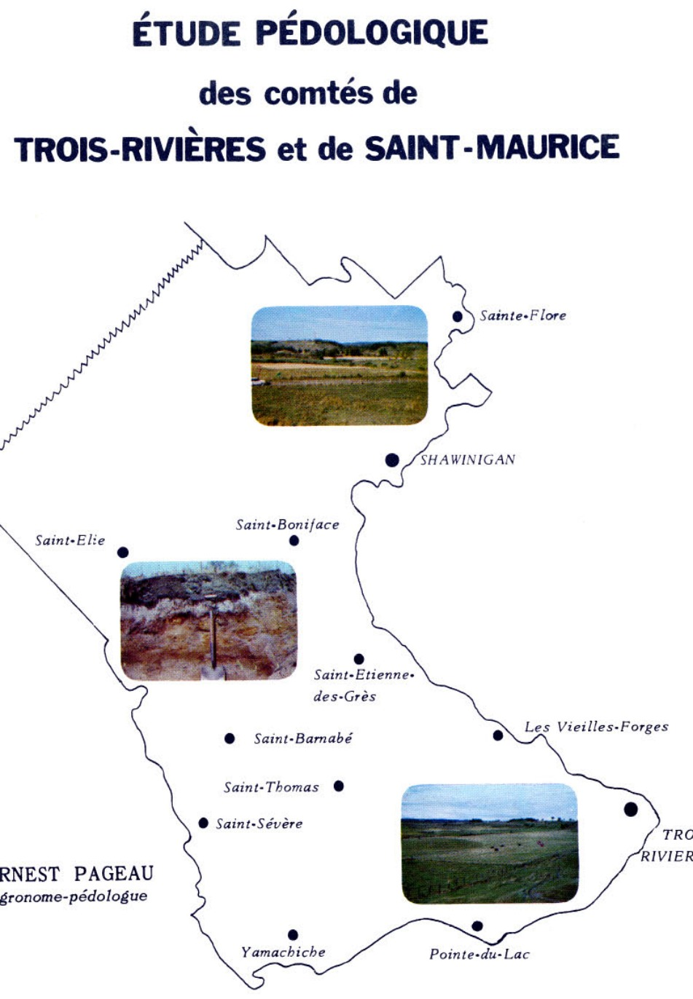
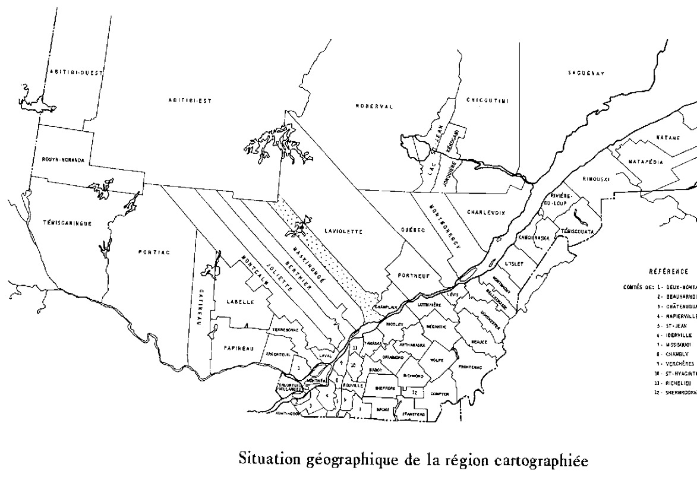
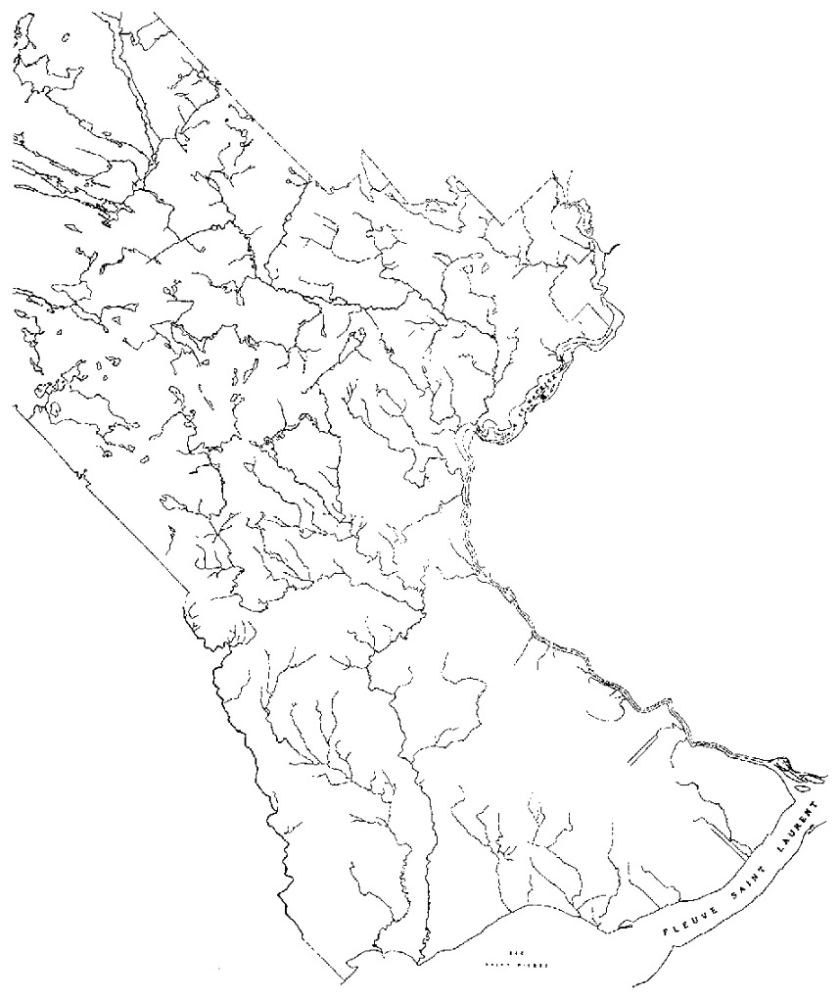
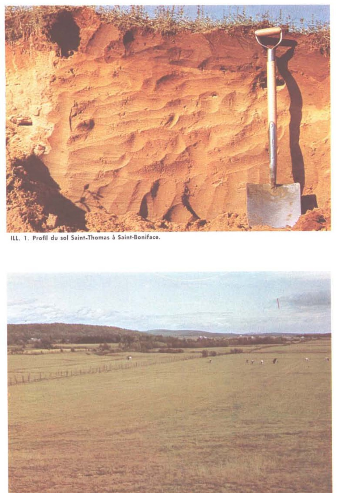
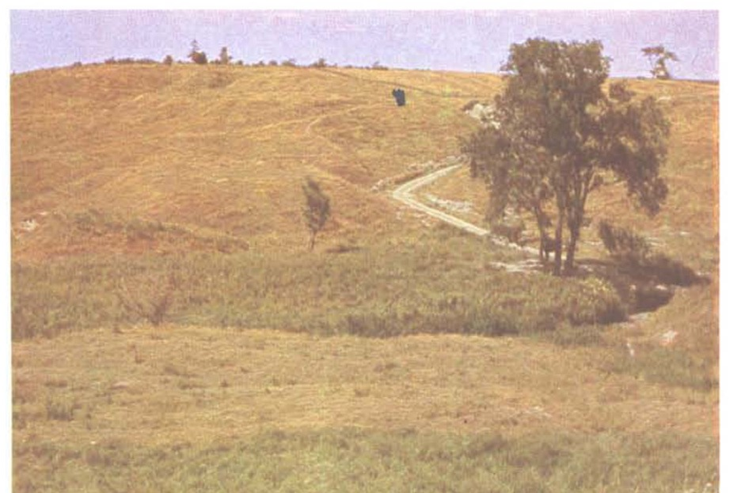
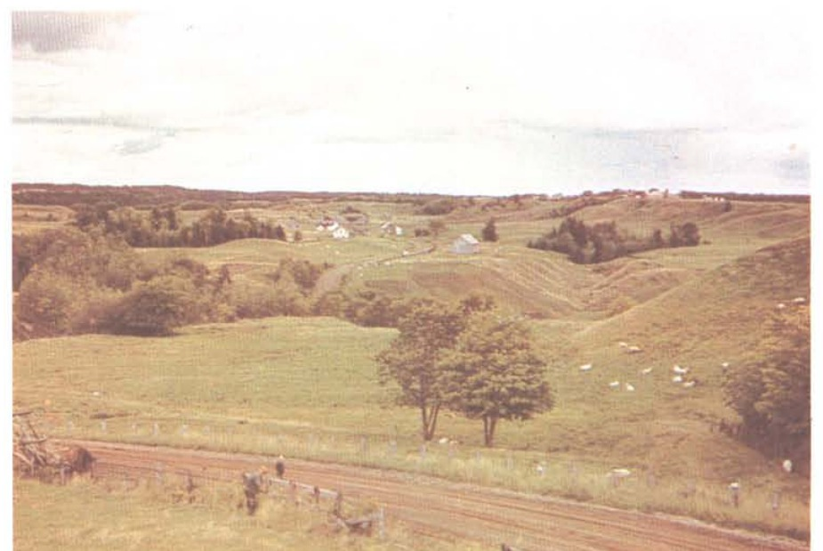

ÉTUDE PÉDOLOGIQUE
des comtés de
TROIS-RIVIÈRES et de SAINT-MAURICE

ERNEST PAGEAU
agronome-pédologue
Division des Sols, Service de l'Enseignement et de la Recherche
MINISTÈRE DE L'AGRICULTURE ET DE LA COLONISATION DU QUÉBEC
1967
ÉTUDE PÉDOLOGIQUEdes comtés deTROIS-RIVIÈRES ET DE SAINT-MAURICE
SOIL RESEARCH
INSTITUTE
AUG 3 1972
RESEARCH BRANCH
OTTAWA
Bulletin technique No 14
Division des Sols, Service de la Recherche
MINISTÈRE DE L'AGRICULTURE ET DE LA COLONISATION DU QUÉBEC
Cette publication est une contribution
de la
Auguste Mailloux, agronome
chef
Service de la recherche et de l'enseignement
Bertrand Forest, agronome
directeur
COUVERTURE : représentation du territoire à l'étude.
(illustration de Henri-H. Bois.)
PREMIÈRE PARTIE
DEUXIÈME PARTIE
A. LA PLAINE DU SAINT-LAURENT
- Série Saint-Samuel . . . . . . . . . 37
- Série Saint-Laurent . . . . . . . . 38
- Série Baudette . . . . . . . . . . 43
- Série Courval . . . . . . . . . . . 45
- Série Aston . . . . . . . . . . . . 46
- Série Rideau . . . . . . . . . . . 47
- Série Sainte-Rosalie . . . . . . . . 48
B. LE PLATEAU LAURENTIEN . . . . . . . . . . 50
-
Les alluvions fluviatiles récentes et deltaïques . . . . 50
- Série Lachute . . . . . . . . . . . . 50
- Série Morin . . . . . . . . . . . . 51
- Série Déligny . . . . . . . . . . . 52
- Série Saint-Louis . . . . . . . . . . 53
- Série Ivry . . . . . . . . . . . . . 54
- Série Bevin . . . . . . . . . . . . 56
-
Les dépôts fluvio-glaciaires et deltaïques . . . . . . 57
- Série Mont-Rolland . . . . . . . . . 57
- Série Matamhin . . . . . . . . . . 58
- Série Saint-Gabriel . . . . . . . . . 59
-
Les dépôts lacustro-marins . . . . . . . . . . . . 60
- Série Piedmont . . . . . . . . . . . 60
- Série Pontiac . . . . . . . . . . . 61
- Série Dalhousie . . . . . . . . . . . 62
- Série Brandon . . . . . . . . . . . 63
-
Les dépôts de tills glaciaires . . . . . . . . . . . 64
- Série Sainte-Agathe . . . . . . . . . 64
- Série Saint-Colomban . . . . . . . . 65
C. SOLS ORGANIQUES ET TOURBEUX . . . . . . . . . 65
- Terre noire bien décomposée . . . . . . . . . . 65
- Terre noire moyennement décomposée . . . . . . . 65
- Terre noire sur sable . . . . . . . . . . . . 65
- Terre noire sur argile . . . . . . . . . . . 66
- Tourbe . . . . . . . . . . . . . . . . . 66
- Marécage . . . . . . . . . . . . . . . . 66
D. DIVERS . . . . . . . . . . . . . . . . . . . 66
- Alluvions non différenciées . . . . . . . . . . 66
- Dunes . . . . . . . . . . . . . . . . . . 66
- Affleurements rocheux . . . . . . . . . . . 67
- Terrains colluvio-alluvionnaires . . . . . . . . . 67
TROISIÈME PARTIE
Valeur agricole comparative des sols classés des comtés
de Trois-Rivières et de Saint-Maurice . . . . . . . . . . . 68
Définition et interprétation des différentes classes . . . . . . 69
ANNEXE I Méthodes analytiques . . . . . . . . . . . . 71
ANNEXE II Superficie des sols du comté de Trois-Rivières . . . . . . . . . . . . . . . . . . . . . . . . 72
ANNEXE III Superficie des sols du comté de Saint-Maurice . . . . . . . . . . . . . . . . . . . . . . . 74
ANNEXE IV Nomenclature des horizons . . . . . . . . . 76
BIBLIOGRAPHIE . . . . . . . . . . . . . . . . . . . . . 79
CARTES DANS LE TEXTE
- Carte de la situation géographique . . . . . . . . . . . 8
- Carte du réseau hydrographique . . . . . . . . . . . 13
CARTES HORS-TEXTE
Cartes des sols au 1:63,000 (en couleur) en pochette
à la fin de ce bulletin
ILLUSTRATIONS
- Profil du sol Saint-Thomas à Saint-Boniface . . . . . . 39
- Caténa des sols Achigan et Saint-Thomas entre Charette et Saint-Boniface . . . . . . . . . . . . . 39
- Profil du loam Baudette à Yamachiche . . . . . . . . 40
- Profil du loam Rideau le long de la Petite Rivière Yamachiche . . . . . . . . . . . . . . . . . 40
- Topographie du sol Rideau, phase érodée, le long de la Petite Rivière Yamachiche . . . . . . . 41
- Profil du sol Pontiac à Sainte-Flore . . . . . . . . . 41
- Caténa Pontiac-Dalhousie, le long de la Grande Rivière Yamachiche à Saint-Barnabé . . . . . . . . 42
- Terrains colluvio-alluvionnaires le long de la Rivière-du-Loup à Saint-Sévère . . . . . . . . . . 42
REMERCIEMENTS
L'auteur exprime sa vive reconnaissance à M. Auguste Mailloux pour ses conseils éclairés et à M. Auguste Scott pour l'aide apportée à la corrélation des séries de sols.
Il désire également souligner tant la collaboration de ses collègues pédologues que celle des techniciens analystes. De même, l'auteur tient à rendre hommage au travail de M. Yvan Gourde dans le montage des cartes qui accompagnent ce rapport.
Qu'il me soit permis de mentionner la collaboration très étroite de M. Rolland Marcoux, pédologue, dans la révision attentive du manuscrit de ce rapport et des suggestions utiles qu'il a apportées.
INTRODUCTION
La présente étude pédologique englobe les sols des comtés de Trois-Rivières et de Saint-Maurice. Elle comprend trois parties distinctes et inséparables.
La première partie donne d'abord une description générale du territoire puis un bref aperçu de la géologie, de la nature des dépôts superficiels, de l'hydrographie, de la climatologie et de la végétation de la région.
La deuxième partie, consacrée à la description des différentes séries de sols, mentionne et souligne leurs caractères distinctifs tout en procurant certaines données analytiques.
Enfin, la troisième partie traite succinctement de la valeur agricole comparative des sols et de leur classement selon un indice de productivité comparé.

PREMIÈRE PARTIE
Description générale de la région
1. Situation et étendue
Les comtés de Trois-Rivières et de Saint-Maurice se situent entre les longitudes 72°30' et 73°00' et les latitudes 46°15' et 46°40'. Ils s'étendent sur une profondeur de 28 milles et une largeur moyenne d'environ 21 milles. La superficie totale de ces comtés est de 1,164,800 acres ou 1,820 m.c. Toutefois la partie étudiée couvre 204,323 acres ou 319 m.c. Situés à l'ouest de la rivière Saint-Maurice, ils sont bornés à l'est par les comtés de Champlain et Laviolette; au sud par le fleuve Saint-Laurent et le lac Saint-Pierre, à l'ouest par le comté de Maskinongé et au nord-ouest par l'Abitibi.
2. Système de communications
Les comtés de Trois-Rivières et de Saint-Maurice sont desservis par un réseau de chemins de fer et celui de la voirie provinciale. Le Pacifique Canadien couvre les parties sud de ces comtés, traverse Yamachiche, Pointe-du-Lac et Trois-Rivières. La ligne Montréal-Québec est greffée à celle de Trois-Rivières qui rejoint Saint-Michel-des-Forges, Marchand, La Gabelle, Les Grès où elle franchit la rivière Saint-Maurice pour atteindre Shawinigan-Sud, Shawinigan et Grand-Mère. Une deuxième voie, celle du Canadien National, traverse le nord du comté de Saint-Maurice et passe par les localités de Charette, de Saint-Boniface, de Shawinigan et de Grand-Mère.
Le réseau de la Voirie du Québec comprend deux routes importantes : la route 2 Montréal-Québec, traverse Yamachiche, Pointe-du-Lac et Trois-Rivières. La route 19B part de Yamachiche, oblique vers Saint-Barnabé, Saint-Boniface et rejoint la route 19 à Shawinigan. Cette dernière route se continue jusqu'à Grand-Mère.
Deux routes secondaires sillonnent la région : l'une part de Trois-Rivières en direction de Saint-Michel-des-Forges et de Saint-Étienne puis rejoint la route 19B à Saint-Boniface. L'autre, laisse Saint-Paulin (Maskinongé), traverse Charette et emprunte la route 19B à environ trois milles au sud-ouest de Saint-Boniface.
3. Géologie de la roche de fond
Les assises géologiques des basses terres du Saint-Laurent appartiennent aux formations ordoviciennes, tels que les schistes de Lorraine, de Richmond, d'Utica et les calcaires de Black-River et de Trenton. Ces formations se trouvent à Pointe-du-Lac, à Yamachiche, à Saint-Thomas-de-Caxton, à Saint-Barnabé et à
Saint-Étienne. D'étroites bandes de calcaire de Chazy, de dolomie de Beekmantown et de grès de Potsdam gisent à Charette et à Saint-Boniface et complètent les séries géologiques de la région (1).
La nature lithologique de ces différentes formations géologiques a peu ou pas influencé directement l'évolution et les propriétés des sols puisque la roche en place est recouverte d'un épais manteau d'alluvions marines, fluviatiles et deltaïques.
Le plateau laurentien qui s'étend dans la partie supérieure du comté de Saint-Maurice est constitué de roches ignées et métamorphiques précambriennes où dominent les granites, le gneiss, les anorthosites, etc. Ces formations géologiques occupent les localités de Saint-Mathieu, de Saint-Gérard, de Saint-Élie et des portions de Saint-Boniface et de Sainte-Flore.
4. Dépôts superficiels
Les comtés de Trois-Rivières et de Saint-Maurice présentent deux régions naturelles distinctes : la plaine du Saint-Laurent et le plateau laurentien. Les matériaux détritiques qui recouvrent l'une et l'autre de ces deux unités physiographiques ont une origine et des caractères lithologiques différents.
La démarcation entre les dépôts de la plaine et ceux du plateau est surtout liée au relief, aux formes et à la nature stratigraphique des terrains. Au départ, cette distinction aide à mieux comprendre l'évolution et la répartition des sols dans les comtés à l'étude.
a) La plaine du Saint-Laurent
Cette unité physiographique, caractérisée par des grands ensembles plats, se subdivise, suivant la nature et le mode de mise en place de sa couverture meuble, en trois zones : une bande étroite d'alluvions récentes et marécageuses en bordure du fleuve, une plaine d'argile marine Champlain et enfin, une vaste plaine sablonneuse, le delta du Saint-Maurice. Chacune de ces étendues porte des sols différents ce qui facilite leur comparaison.
La première zone, la plus basse, est constituée d'alluvions récentes. Elle occupe une faible étendue en bordure du lac Saint-Pierre, à Yamachiche, et, la partie sud-ouest du comté de Trois-Rivières. Cette nappe d'alluvions récentes et modernes surmonte l'argile marine; elle est sujette aux inondations saisonnières des rivières ou du fleuve. L'épaisseur et l'arrangement des couches limoneuses ou sableuses sur l'argile sous-jacente permettent de distinguer les sols Berthier, Chaloupe et Dupas. Aux alluvions récentes du fleuve, s'ajoutent des dépôts marécageux qui occupent les bas champs, en bordure du lac Saint-Pierre, à Yamachiche. Ce sont des terrains difficiles d'accès, constamment gorgés d'eau.
La deuxième zone est constituée surtout d'une nappe d'argile marine sédimentée dans les eaux de la mer de Champlain. Ces argiles s'étendent de la section nord de Yamachiche jusqu'au nord de Saint-Barnabé. Quant à la largeur
de cette zone elle se déploie de la Rivière-du-Loup, pour l'ouest, jusqu'au rebord est de la Grande-Rivière Yamachiche, aux limites de Saint-Thomas-de-Caxton.
Les sols argileux de la plaine s'identifient aux séries Rideau, Sainte-Rosalie, Saint-Laurent et Baudette. Les sols Courval et Aston, bien que recouverts d'une mince couche sableuse sur argile, se rattachent aussi aux sols de texture fine. On retrouve même cette argile dans les vallées, le long des rivières, jusqu'à une altitude moyenne de 850 pieds.
Au pourtour des Laurentides, la plaine d'argile se recouvre de sables et de graviers qui s'alignent en cordons ou s'étagent en terrasses jusqu'à la bordure du plateau laurentien.
La troisième zone, la plus vaste, est constituée d'alluvions sableuses et deltaïques. Cet immense delta sablonneux du Saint-Maurice, remanié en terrasses, décrit un immense quadrilatère qui s'étend depuis Pointe-du-Lac et la partie nord du comté de Trois-Rivières jusqu'aux environs de Saint-Boniface. La largeur de cette zone, à l'ouest, comprend les limites de Saint-Thomas-de-Caxton, de Charette et de Saint-Élie et, pour l'est, la rivière Saint-Maurice. Sont également incluses dans cette zone les paroisses de Saint-Étienne et de Saint-Michel-des-Forges.
Les sols Lanoraie, Mille-Isles, Saint-Jude, Sorel, Uplands, Péningue, Saint-Thomas, Sainte-Sophie, Achigan et Saint-Samuel se partagent les sables des deltas et des terrasses.
b) Le plateau laurentien
Toute l'étendue nord-ouest du comté de Saint-Maurice fait partie du plateau laurentien. La bordure montagneuse qui se dresse parfois d'un seul jet au-dessus de la plaine est fortement entaillée par la vallée de la rivière Shawinigan, le long de laquelle s'échelonnent les paroisses de Saint-Mathieu et de Saint-Gérard. Au nord de ces deux localités, cette vallée traverse un massif montagneux de quelque 13 milles de largeur, dont les sommets peuvent atteindre jusqu'à 1,000 pieds d'altitude.
Au relief parfois capricieux du plateau laurentien correspondent des dépôts également différenciés. Ainsi dans les vallées se juxtaposent des alluvion fluviatiles récentes, des dépôts de plaines ou de bassins d'épandages fluvio-glaciaires ou lacustres, des sédiments disposés en terrasses ou étalés en deltas. À ces divers types de dépôts, suivant leur texture, leur topographie, etc., correspondent les sols de Morin, de Deligny, de Saint-Louis, d'Ivry, de Bévin, de Mont-Rolland et de Matambin. Des dépôts limoneux d'origine lacustre-marine se sont vraisemblablement accumulés alors que les eaux de la mer Champlain remontaient le cours inférieur des rivières. Les sols Piedmont, Pontiac et Dalhousie, répandus dans les vallées, coiffent généralement ce genre de dépôts.
Les tills glaciaires couvrent la majeure partie du plateau laurentien. Leur épaisseur et leur topographie, quoique très variables, montrent une certaine
succession. Étant généralement minces et aplanis sur les sommets des collines, ils deviennent profonds et fortement en pente sur les versants. Sur les tills sablo-caillouteux en place se développent ordinairement les sols Sainte-Agathe. Le terrain Saint-Colomban désigne un type de paysage constitué de collines rocheuses et de moraines caillouteuses d'ablation. Enfin, les tourbières ou marécages occupent des dépressions où les conditions du milieu favorisent leur formation.
5. Hydrographie
Le réseau hydrographique des comtés de Trois-Rivières et de Saint-Maurice comprend trois importants cours d'eau. Ce sont : la rivière Saint-Maurice, la Grande-Rivière Yamachiche et la Rivière-du-Loup.
La rivière Saint-Maurice prend naissance dans la partie méridionale du comté de Laviolette qu'elle traverse dans sa longueur. Elle limite le comté de Saint-Maurice à trois milles au nord de Grand-Mère. De là, elle oblique à l'ouest jusqu'à Shawinigan, où elle reçoit les eaux de la rivière Shawinigan qui draine la partie ouest de Sainte-Flore et les paroisses de Saint-Gérard et de Saint-Mathieu. Le Saint-Maurice se dirige ensuite vers le sud et borne les comtés de Champlain et de Saint-Maurice jusqu'à son embouchure à Trois-Rivières. Le long de son parcours, il recueille les eaux d'une grande partie de Sainte-Flore, des cités de Grand-Mère et de Shawinigan, des paroisses de Saint-Boniface, de Saint-Étienne-les-Grès et de Saint-Michel-des-Forges.
La Grande-Rivière Yamachiche descend du nord de Saint-Élie-de-Caxton et se dirige obliquement vers le sud dans la paroisse de Charette pour atteindre la partie nord-ouest de Saint-Étienne-les-Grès. À cet endroit, elle collecte les eaux de la rivière Machiche dans les parties sud et sud-ouest de Saint-Boniface. De là, elle se dirige vers l'ouest et le sud-ouest, tout en formant les limites entre Saint-Thomas-de-Caxton et Saint-Barnabé; elle progresse ensuite vers le sud et le sud-ouest et se déverse dans le lac Saint-Pierre à 2 milles au sud de Yamachiche.
La Rivière-du-Loup prend sa source dans le comté de Maskinongé, coule vers le nord-est et forme les limites des comtés de Maskinongé et de Saint-Maurice au nord-ouest de Charette. Elle sert ensuite de limites à Saint-Sévère et à toute la partie ouest de Yamachiche jusqu'à la ligne du chemin de fer du Pacifique Canadien. De cet endroit, elle se dirige vers Louiseville qu'elle traverse pour se jeter enfin dans le lac Saint-Pierre, à 3 milles au sud de cette ville.
6. Climatologie
Le climat a une grande influence sur la formation et l'évolution des sols de même que sur la croissance des plantes. L'étude des tableaux qui suivent permet d'ailleurs de faire le point sur les conditions de température et de précipitation dans le milieu à l'étude.

TABLEAU I — Stations météorologiques (6a)
| Date d'établissement | Latitude | Longitude | Altitude | Bassin hydrographique (4) | |
|---|---|---|---|---|---|
| Berthierville | 1919 | 46°06' | 73°11' | 40' | Saint-Laurent |
| Shawinigan | 1903 | 46°34' | 72°43' | 306' | Saint-Maurice |
| Saint-Tite | 1920 | 46°45' | 72°39' | 465' | Saint-Maurice |
| Trois-Rivières | 1934 | 46°21' | 72°49' | 50' | Saint-Maurice |
La situation géographique des différentes stations météorologiques correspond aux différentes régions naturelles des comtés de Trois-Rivières et de Saint-Maurice.
TEMPÉRATURE
Les données climatiques recueillies à trois postes météorologiques montrent qu'il existe très peu de différence entre le climat de la plaine du Saint-Laurent et celui du plateau laurentien.
TABLEAU II — Températures moyennes en degrés F° (6b)
| Mois | Berthierville | Trois-Rivières | La Tuque |
|---|---|---|---|
| Novembre | 39 | 39 | 35 |
| Décembre | 27 | 24 | 22 |
| Janvier | 22 | 20 | 16 |
| Février | 22 | 23 | 19 |
| Mars | 33 | 34 | 31 |
| Avril | 47 | 48 | 48 |
| Moyenne (du 1er nov. au 30 avril) | 32 | 32 | 29 |
| Mai | 64 | 63 | 63 |
| Juin | 73 | 74 | 70 |
| Juillet | 78 | 78 | 76 |
| Août | 76 | 76 | 75 |
| Septembre | 67 | 67 | 65 |
| Octobre | 54 | 53 | 51 |
| Moyenne (du 1er mai au 31 octobre) | 69 | 69 | 67 |
| Moyenne annuelle | 50.3 | 49.9 | 47.5 |
Berthierville : 20 ans Trois-Rivières : 15 ans La Tuque : 28 ans
Les mois de juin, juillet, septembre et octobre enregistrent quelques écarts mais l'altitude ne semble pas jouer un rôle nettement déterminant du moins en ce qui regarde la température. Les données de La Tuque, située à 513 pieds, se comparent bien à celles de la station de Saint-Tite (465 pieds). Il y a en fait similitude des températures d'été entre le Nord et le Sud de la Mauricie.
PÉRIODES SANS GEL
On constate au tableau III que la période sans gel est assez longue, sauf pour la région de Saint-Tite où la moyenne est de 118 jours; elle varie de 128 à 139 jours pour les trois autres stations.
TABLEAU III — Périodes sans gelée (6a)
| Date moyenne | Nombre de jours sans gelée | |||||
|---|---|---|---|---|---|---|
| Période (années) |
Dernière gelée |
Première gelée |
Moy. | Max. | Min. | |
| Berthierville | 29 | 19 mai | 24 sept. | 128 | 168 | 102 |
| Shawinigan | 45 | 15 mai | 1 oct. | 139 | 178 | 97 |
| Saint-Tite | 28 | 23 mai | 18 sept. | 118 | 138 | 82 |
| Trois-Rivières | 26 | 3 mai | 25 sept. | 135 | 161 | 114 |
Comme le mentionne R. Blanchard, les dernières gelées s'étendent jusqu'au 10 juin dans la région de La Tuque et les endroits avoisinants alors que les premières gelées hâtives ont lieu parfois vers le 25 août. Et Blanchard explique : « Par comparaison avec les plaines du Saint-Laurent, on constate aussi que les gelées tardives valent à la végétation des Laurentides, à son départ, un gros retard de trois bonnes semaines. Mais ce décalage est en partie rattrapé par la brutalité des chaleurs qui se déchaînent ensuite, le sol plus léger et plus sec de la Mauricie intérieure s'échauffe d'autre part plus vite que les grosses terres du bas pays. La végétation part donc plus vite et finalement le retard, lors des récoltes, se réduit à une dizaine de jours. » (2)
PRÉCIPITATIONS
Dans la Mauricie, les pluies sont assez abondantes pendant l'été. Le maximum de la précipitation se produit en juillet et en août, au moment où la végétation profite du même temps de conditions de température favorables à la croissance.
TABLEAU IV — Précipitation mensuelle et saisonnière aux stations météorologiques (6b)
| Mois | Berthierville1 | Shawinigan1 | Saint-Tite1 | Trois-Rivières2 |
|---|---|---|---|---|
| Décembre | 3.15* | 2.90 | 3.07 | 3.74 |
| Janvier | 2.80 | 2.86 | 2.81 | 3.25 |
| Février | 2.32 | 2.22 | 2.13 | 2.82 |
| Hiver | 8.27 | 7.98 | 8.01 | 9.81 |
| Mars | 2.77 | 2.66 | 2.46 | 3.06 |
| Avril | 3.00 | 2.73 | 2.75 | 2.86 |
| Mai | 2.61 | 2.85 | 2.77 | 3.22 |
| Printemps | 8.38 | 8.24 | 7.98 | 9.14 |
| Juin | 3.42 | 3.34 | 3.43 | 3.94 |
| Juillet | 3.39 | 3.80 | 3.86 | 3.64 |
| Août | 3.35 | 3.47 | 3.61 | 3.99 |
| Été | 10.16 | 10.61 | 10.90 | 11.57 |
| Septembre | 3.54 | 3.76 | 3.74 | 4.09 |
| Octobre | 2.98 | 3.08 | 2.78 | 3.13 |
| Novembre | 3.19 | 3.04 | 3.24 | 3.44 |
| Automne | 9.71 | 9.88 | 9.76 | 10.66 |
| Annuelle | 36.52 | 36.71 | 36.65 | 41.18 |
7. Végétation
Le Frère Cléonique-Joseph décrit ainsi la végétation de la région : « Ces paysages fluctuants furent à la longue immobilisés et envahis par des bétulaies et par la forêt coniférienne qui s'y sont continuées jusqu'à nos jours. Au temps du régime seigneurial les parties hautes étaient encore couvertes de pinières géantes dont la majesté des fûts nous est rappelée par quelques descendants actuels. Après la coupe des bois, elles ne furent cultivées que pendant deux ou trois générations : leur appauvrissement fut rapide et la dénudation excessive qu'on y avait pratiquée y donna lieu de nouveau à des dunes et à des champs désertiques. À Pointe-du-Lac les sables occupent une large partie du territoire communal. Ceux qui bordent le rivage du lac Saint-Pierre ont été en partie repeuplés de conifères; et ceux qui longent le chemin de la « Baie-des Mines », présentent un véritable pêle-mêle de buttes, de douves, d'enclaves marécageuses, de taillis et d'ébauches forestières. Les mêmes conditions de terrain et de couverture végétale règnent localement jusque vers Trois-Rivières et Saint-Étienne ».(5)
Dans la zone de 25 à 400 pieds, la végétation est mélangée et offre une certaine analogie avec les types de sols. Sur les sols argileux, on rencontre souvent l'orme blanc, l'érable à Giguère et l'aubépine. Par ailleurs, sur les sols sableux ou graveleux bien égouttés croissent le peuplier faux-tremble, la
plaine rouge, le sapin baumier, le bouleau blanc, le bouleau jaune, le pin blanc, le peuplier à grandes dents, le cerisier de Virginie ou cerisier-à-grappe, le cerisier de Pennsylvanie ou petit merisier et le pin rouge. Dans les sols sableux et graveleux à égouttement imparfait, les boisés sont composés d'érable argenté, de cèdre, de mélèze, d'épinette noire, de saule, de pruche et de bouleau gris.
Dans la partie méridionale du comté de Saint-Maurice, dans la zone de 400 à 900 pieds, les sols sont relativement boisés. Toutefois dans les parties cultivées, sur les sols sableux ou graveleux bien égouttés, on rencontre l'érable-à-sucre, le peuplier faux-tremble, le sapin baumier, le bouleau blanc, le vinaigrier, le peuplier à grandes dents, le chêne rouge, le hêtre, le tilleul et le noyer cendré. Sur les sols sableux ou graveleux imparfaitement drainés le cèdre, le mélèze, l'épinette noire, la pruche, le saule et la plaine rouge. Enfin sur les sols argileux l'épinette noire, la plaine rouge, l'aubépine, le saule et l'orme.
DEUXIÈME PARTIE
Les Sols
Classification génétique des sols
La classification génétique, basée sur le degré d'évolution du sol et le développement du profil, permet, au moyen de critères et de caractéristiques bien définis, d'effectuer le groupement des sols lorsque ces derniers présentent certaines similitudes. Ainsi, dans la région à l'étude, les sols appartiennent à sept grands groupes de sols différents : les bruns acides boisés, les podzols, les podzols humiques, les gleysols, les gleysols humiques, les sols organiques et les régosols. (10)
SOLS BRUNS ACIDES BOISÉS. Ces sols présentent un horizon de surface L-H peu minéralisé, reposant sur un horizon blanchi et éluvial Ae reposant sur un horizon Bf, Bfh ou Bm et se développent sur des matériaux acides ou neutres. Le solum est généralement acide.
PODZOLS. Les sols qui appartiennent à ce grand groupe ont un horizon de surface L-H peu minéralisé, un horizon blanchi et éluvial Ae reposant sur un horizon d'accumulation Bf, Bfh de couleur généralement brun rouge.
PODZOLS HUMIQUES. Les podzols humiques ressemblent aux podzols mais se différencient de ces derniers en ce qu'ils ont un horizon d'accumulation Bhf dans lequel la matière organique demeure la principale source d'accumulation.
GLEYSOLS. Les sols de ce grand groupe ont généralement un horizon de surface L-H ou un mince horizon Ah. Le profil montre parfois un horizon Aej et les horizons Bg et Cg sont fortement gléifiés. Les gleysols ont généralement une texture fine et la réaction du sous-sol est ordinairement neutre ou alcaline.
GLEYSOLS HUMIQUES. Les gleysols humiques ont les caractéristiques des gleysols mais possèdent un horizon de surface Ah supérieur à 3 pouces d'épaisseur.
SOLS ORGANIQUES. L'accumulation de débris organiques dans les anciens lacs, les marais et les dépressions a donné naissance à des sols organiques qui ont été classés, dans le présent travail, selon leur degré de décomposition et/ou leur profondeur.
RÉGOSOLS. Ce sont des sols jeunes dont l'évolution est à peine amorcée dans le profil. L'horizon B est absent ou faiblement exprimé de sorte que le plus souvent le profil ne possède que les horizons A et C.
Morphogénèse des sols
Sous l'influence des facteurs de formation du sol tels que le climat, la végétation et le temps, différents sols se sont développés sur les dépôts ou les formations géologiques décrits précédemment.
Pour atteindre le stade de sol les divers dépôts géologiques sont soumis à des transformations physico-chimiques. Ainsi, sous l'action acidifiante des eaux
d'infiltration chargées d'acides, les substances entraînées (calcium, fer, aluminium, colloïdes humiques ou argileux) ou accumulées à différents niveaux dans le sol donnent naissance à des bandes horizontales superposées appelées « horizons ». Ces bandes diffèrent entre elles par la couleur, l'épaisseur, la structure, la réaction, etc.
Profil de sol
On nomme profil de sol la succession verticale des différents horizons. On les désigne successivement, à partir de la surface du sol, par les lettres A, B, C. Ces principaux horizons peuvent être subdivisés en sous-horizons (10). Ces derniers sont généralement notés par des lettres minuscules Ah, Ae, Bf, Bt, ou par des symboles indiquant une particularité de l'horizon, v.g. Bf2, Cca, Ck (voir annexe IV).
Série, complexe de séries, type, phase et caténa
La série est l'unité fondamentale en classification des sols. Elle identifie les sols issus d'une même roche-mère et dont les caractéristiques pédogénétiques et les conditions de drainage sont semblables.
Le complexe de séries représente une combinaison de deux ou plusieurs séries de sols dont l'agencement est tel qu'il est impossible de les cartographier isolément.
Le type se confond dans la série et indique une variation texturale dans l'horizon de surface.
La phase souligne des particularités externes au sol et qui ont généralement trait au manque de profondeur ou à la pierrosité du sol.
La caténa ou chaîne de sols représente un continuum de sols évoluant sur un même matériau parental mais ayant des conditions de drainage différentes à cause du relief.
Classement des sols d'après la roche-mère et l'état du drainage
| SYMBOLES | GROUPES GÉNÉTIQUES |
|---|---|
| A — LA PLAINE DU SAINT-LAURENT | |
| I — Les alluvions fluviatiles récentes | |
| a — Sols dérivés de limons | |
|
Drainage imparfait Loam La Chaloupe |
Ce G |
| b — Sols dérivés de limons argileux | |
|
Drainage imparfait Loam à loam argileux Berthier |
Bh G |
| c — Sols dérivés de loam limoneux sur sable | |
|
Drainage imparfait Loam limoneux Dupas Loam limono-argileux Dupas |
Dp G Dpa G |
| 2 — Dépôts éoliens | |
| a — Sols dérivés de sables éoliens | |
|
Drainage excessif Sable fin Lanoraie |
L P.R. |
| 3 — Alluvions deltaïques et marines | |
| a — Sols dérivés de sables grossiers | |
|
Drainage excessif Sable grossier Mille-Isles Drainage imparfait Sable grossier Saint-Jude Sable grossier Saint-Jude, phase rocheuse |
MI P J P J-r P |
| b — Sols dérivés de sables moyens | |
|
Drainage bon Sable moyen Sorel Sable moyen Uplands Sable moyen Uplands, phase graveleuse Sable moyen Uplands, phase rocheuse |
S P. Up P. Up-g P. Up-r P. |
| c — Sols dérivés de sables fins | |
|
Drainage excessif Sable fin Péningue Drainage bon Sable fin Saint-Thomas Drainage modérément bon Sable fin Sainte-Sophie |
Pg P. Th P. Sp P. |
GÉNÉTIQUES
d — Sols développés sur argile interstratifiée de sable
e — Sols dérivés de loam limoneux
f — Sols dérivés de sable loameux
g — Sols dérivés de loam sableux
h — Sols dérivés d'argiles non calcaires
B — LE PLATEAU LAURENTIEN
I — Les alluvions fluviatiles récentes et deltaïques
a — Sols dérivés de loam sableux
b — Sols dérivés de sables grossiers
phase rocheuse Mo-r P.
c — Sols dérivés de sables fins
Drainage excessif
Drainage imparfait
2 — Dépôts fluvio-glaciaires et deltaïques
a — Sols dérivés de sables graveleux
Drainage excessif
Drainage imparfait
b — Sols dérivés de sables graveleux et caillouteux
Drainage excessif
3 — Dépôts lacustro-marins
a — Sols dérivés de sable (2' à 3') sur argile
Drainage bon
b — Sols dérivés de loam argileux
Drainage bon
Drainage imparfait
Drainage imparfait à mauvais
4 — Dépôts de tills glaciaires
a — Sols dérivés de loam sablo-caillouteux
Drainage bon
| SYMBOLES | GROUPES GÉNÉTIQUES | |
|---|---|---|
| b — Sols minces et caillouteux Saint-Colomban, texture et drainage variables |
Cb | P. |
C — SOLS ORGANIQUES ET TOURBEUX
Drainage très mauvais
| Terre noire bien décomposée | TN1 | O. |
| Terre noire moyennement décomposée | TN2 | O. |
| Terre noire sur argile (6" à 12") | TN/a | O. |
| Terre noire sur sable (6" à 15") | TN/s | O. |
| Tourbe (texture variable) | T | O. |
| Marécage | 🪷 |
D — DIVERS
| Alluvions non différenciées, texture et drainage variables | All |
| Dunes, sable fin à moyen drainage excessif | Du |
| Affleurements rocheux | A |
| Terrains colluvio-alluvionnaires texture argileuse texture limoneuse texture sableuse texture sablo-graveleuse |
Xa Xl Xs Xs-g |
GRANDS GROUPES DE SOLS
| B.A.B. — | Brun acide boisé |
| G — | Gleysol |
| G.H. — | Gleysol humique |
| G.B.P. — | Gris brun podzolique |
| O — | Organique |
| P — | Podzol |
| P.H. — | Podzol humique |
| P.R. — | Podzol-régosol |
| R — | Régosol |
DESCRIPTION DES SOLS
A. LA PLAINE
1. ALLUVIONS FLUVIATILES RÉCENTES
Loam La Chaloupe (Ce) 1,729 acres
Le loam La Chaloupe occupe deux aires principales, dont l'une dans le rang Sainte-Marguerite (Trois-Rivières) et l'autre à Yamachiche le long de la ligne du chemin de fer du Pacifique Canadien. L'altitude des sols La Chaloupe se situe à 25 pieds au-dessus du niveau du fleuve. La texture des horizons superficiels est loameuse; le substratum de sable atteint parfois une profondeur de 20 pieds. La topographie est unie à légèrement ondulée et le drainage est généralement imparfait.
Profil du loam La Chaloupe
| Horizons | Profondeur en pouces | Description |
|---|---|---|
| Aa | 0-12 | Loam à loam sableux, structure granulaire, gris brun clair (2.5Y 6/2), friable; pH : 5.2. |
| Bg | 12-23 | Loam sableux, structure feuilletée, rouge foncé (2.5YR 3/6), à brun jaune (10YR 5/4) avec taches de couleur gris clair (2.5Y 7/2), friable; pH : 5.7 — 5.9. |
| Cg | 23 + | Sable à sable loameux, structure grossièrement feuilletée, gris clair (2.5Y 7/2), avec mouchetures de rouille de couleur brun jaune foncé (10YR 4/4); pH : 6.0 — 6.5. |
Fiche analytique d'un loam La Chaloupe
| Horizon | Profondeur en pouces | Sable % | Limon % | Argile % | pH | C % | N % | Bases totales | C.E. | Saturation % |
|---|---|---|---|---|---|---|---|---|---|---|
| Aa | 0-12 | 43.6 | 32.0 | 24.4 | 5.2 | 2.28 | 0.21 | 5.3 | 8.30 | 64 |
| Bg | 12-23 | 69.6 | 22.0 | 8.4 | 5.7 | 0.21 | 0.02 | 2.2 | 2.18 | 100 |
| Cg | 23 + | 90.8 | 5.2 | 4.0 | 6.0 | 0.03 | 0.01 | 7.6 | 7.15 | 100 |
Utilisation
En général, ces sols se prêtent bien à la culture maraîchère; ils conviennent aussi à la grande culture. En effet, les sols La Chaloupe, même s'ils sont légèrement acides en surface, ont un degré de productivité assez élevé. Ils ont besoin de drainage, d'amendements calcaires et de fertilisants appropriés.
Loam limono-argileux Berthier (Bh) 78 acres
Le loam limono-argileux Berthier ne couvre qu'une petite superficie à la limite ouest du comté de Saint-Maurice dans la paroisse de Yamachiche. Étant donné la faible étendue de cette série, aucun échantillon n'a été prélevé. La description du profil qui suit a été extraite de l'Étude Pédologique du comté de Maskinongé (7)
Les sols Berthier s'identifient à une alluvion récente sur argile Champlain. Ces alluvions se situent à peine à 25 pieds au-dessus du niveau du lac Saint-Pierre. La topographie est unie à légèrement déprimée.
Profil du loam limono-argileux Berthier
| Horizons | Profondeur en pouces |
Description |
|---|---|---|
| Aa | 0-10 | Loam à loam argileux, brun rouge foncé (5YR 3/2 - 2/2), structure granulaire, riche en humus, friable; pH : 6.0. |
| Bg | 10-17 | Argile, brun gris très foncé (10YR 3/2) à gris olive (5Y 4/2), structure polyédrique avec mouchetures de rouille; pH : 6.9. |
| C | 17 + | Argile, olive (2.5Y 4/4), structure colomnaire, consistance plastique et massive, parfois calcaire; pH : 7.8. |
Utilisation
Les sols de la série Berthier sont fertiles. Dans le sous-sol, constitué d'argile Champlain, le pH y est neutre, voire même alcalin. La grande culture demeure d'usage courant sur les sols Berthier.
Loam limoneux Dupas (Dp) 5,220 acres
Le loam limoneux de Dupas se rencontre en égale proportion dans le rang de la Banlieue (Trois-Rivières) et dans la partie sud de la paroisse Yamachiche, zone qui s'étend entre la ligne du chemin de fer du Pacifique Canadien et le lac Saint-Pierre. Tout comme la série La Chaloupe, ces alluvions se maintiennent entre 25 et 50 pieds au-dessus du niveau du lac Saint-Pierre. Ces alluvions récentes reposent sur un loam sableux d'origine Champlain. Les séries Dupas et La Chaloupe se voisinent et le plus souvent elles sont en complexe. Leur topographie est unie et légèrement ondulée.
Profil du loam limoneux Dupas
| Horizons | Profondeur en pouces |
Description |
|---|---|---|
| Aa | 0-10 | Loam limoneux, structure grumeleuse, brun gris très foncé (10YR 3/2), friable; pH : 4.9 — 5.8. |
| Bg | 10-18 | Loam, structure faiblement lamellaire, brun rouge foncé (5YR 3/4) avec taches de gley de couleur olive clair (2.5Y 5/4), friable; pH : 5.3 — 5.8. |
| Cg | 18 + | Loam à loam sableux, sans structure, gris olive (5Y 6/2) avec mouchetures de rouille de couleur brun rouge foncé (5YR3/4), friable; pH : 5.6 — 5.9. |
Fiche analytique d'un loam limoneux Dupas
| Horizon | Profon- deur en pouces |
Sable % |
Limon % |
Argile % |
pH | C % |
N % |
Bases totales |
C.E. | Satura- tion % |
|---|---|---|---|---|---|---|---|---|---|---|
| Aa | 0-10 | 25.6 | 52.0 | 22.4 | 4.9 | 2.78 | 0.36 | 3.2 | 11.80 | 27 |
| Bg | 10-18 | 44.4 | 46.0 | 9.6 | 5.3 | 0.29 | 0.03 | 1.4 | 1.40 | 100 |
| Cg | 18 + | 46.4 | 46.0 | 7.6 | 5.6 | 0.21 | 0.02 | 2.3 | 2.30 | 100 |
Utilisation
Les sols de la série Dupas sont productifs et ils se prêtent bien à la grande culture. Le labour Richard a grandement amélioré l'égouttement des sols Dupas.
Dans les zones occasionnellement inondées, surtout le long du lac Saint-Pierre, les sols reçoivent une couche d'alluvion à chaque crue printanière. Les sols Dupas bénéficient grandement d'engrais équilibrés.
Loam limono-argileux Dupas (Dpa) 2,428 acres
Les sols du loam limono-argileux Dupas se rencontrent à peu près aux mêmes endroits que ceux du loam limoneux Dupas (Dp). Ils sont d'ailleurs très souvent en complexe. La différence entre ces deux séries réside dans le fait que la première est plus limoneuse en surface.
Profil du loam limono-argileux Dupas
| Horizons | Profondeur en pouces |
Description |
|---|---|---|
| Aa | 0-10 | Loam limoneux-argileux à loam argileux, structure granulaire, gris brun très foncé (10YR 3/2), friable; pH : 5.1 — 5.4. |
| Bg | 10-20 | Loam limono-argileux à loam limoneux brun rouge (5YR 5/3) avec taches de gley de couleur gris olive (5Y 5/2), consistance assez compacte; pH : 5.1 — 5.4. |
| Cg | 20 + | Loam, structure faiblement lamellaire, gris olive clair (5Y 6/2) avec mouchetures de rouille de couleur brun foncé (10YR 4/3), consistance plastique; pH : 6.7. |
Fiche analytique d'un loam limono-argileux Dupas
| Horizon | Profondeur en pouces | Sable % |
Limon % |
Argile % |
pH | C % |
N % |
Bases totales | C.E. | Saturation % |
|---|---|---|---|---|---|---|---|---|---|---|
| Aa | 0-10 | 23.6 | 36.0 | 10.4 | 5.4 | 4.43 | 0.32 | 13.2 | 21.50 | 61 |
| Bg | 10-20 | 35.6 | 30.0 | 34.4 | 6.4 | 0.58 | 0.05 | 11.9 | 11.90 | 100 |
| Cg | 20 + | 40.0 | 33.5 | 26.5 | 6.7 | 0.32 | 0.03 | 13.0 | 13.00 | 100 |
Utilisation
Les loams limono-argileux Dupas (Dpa) sont aussi productifs que les loams limoneux Dupas (Dp). Ils ont d'ailleurs les mêmes exigences au point de vue drainage, amendements et fertilisants.
2. DÉPÔTS ÉOLIENS
Sable fin Lanoraie (L) 4,953 acres
Le sable fin Lanoraie couvre de grandes superficies dans Trois-Rivières (Sainte-Marguerite), Pointe-du-Lac, Saint-Thomas-de-Caxton, et quelques étendues minimes à Saint-Michel-des-Forges. L'altitude varie de 50 à 175 pieds. La topographie est ondulée à fortement ondulée et ces sols sont soumis à une érosion modérée et parfois excessive. À maints endroits, ils contribuent à la formation de dunes. Le drainage est excessif.
Profil du sable fin Lanoraie
| Horizons | Profondeur en pouces | Description |
|---|---|---|
| Aa | 0 - 7 | Sable fin, sans structure, brun foncé (7.5YR 4/4), meuble; pH : 5.4. |
| Bfj | 7-14 | Sable fin, sans structure, brun (10YR 5/2) à brun pâle (10YR 6/3), meuble; pH : 5.5. |
| C | 14 + | Sable fin, sans structure, jaune olive (2.5Y 6/6), légèrement ferme; pH : 5.5. |
Fiche analytique d'un sable fin Lanoraie
| Horizon | Profondeur en pouces | Sable % | Limon % | Argile % | pH | C % | N % | Bases totales | C.E. | Saturation % |
|---|---|---|---|---|---|---|---|---|---|---|
| A | 0- 7 | 95.0 | 1.0 | 4.0 | 5.4 | 20.9 | 0.08 | 0.1 | 5.56 | 2 |
| Bfj | 7-14 | 97.0 | 0.4 | 2.6 | 5.5 | 0.75 | 0.03 | 0.1 | 2.44 | 4 |
| C | 14 + | 98.0 | 0.6 | 1.4 | 5.5 | 0.11 | 0.01 | 0.2 | 0.48 | 42 |
Utilisation
Les sols Lanoraie ont une fertilité médiocre. L'enfouissement d'engrais verts et l'apport rationnel d'engrais chimiques rendent la culture du tabac intéressante. Dans les régions de Trois-Rivières et de Pointe-du-Lac, il y aurait lieu de faire une étude sur les possibilités de la culture maraîchère sous irrigation.
3. ALLUVIONS DELTAÏQUES ET MARINES
Sable grossier Mille-Isles (Ml) 2,014 acres
Le sable grossier Mille-Isles se trouve dans Pointe-du-Lac, Saint-Étienne, Yamachiche, Saint-Sévère et Saint-Thomas de Caxton. Il se présente en bandes étroites au-dessus de la plaine. L'altitude varie de 25 à 150 pieds dans Yamachiche, Pointe-du-Lac et Saint-Sévère; dans Saint-Thomas-de-Caxton et Saint-Étienne elle se maintient entre 225 et 275 pieds. Constitué de sable grossier, ce sol ne possède aucune retention. Le drainage est excessif, c'est un sol naturellement sec.
Profil du sable grossier Mille-Isles
| Horizons | Profondeur en pouces |
Description |
|---|---|---|
| Aa | 0- 6 | Sable grossier, sans structure, brun foncé (7.5YR 4/4), meuble; pH : 5.3. |
| Bfh | 6-11 | Sable grossier, sans structure, avec concrétions brun vif (7.5YR 5/6) quelque peu cimenté; pH : 5.5. |
| Bf | 11-22 | Sable grossier, sans structure, brun jaune (10YR 5/8), légèrement compact; pH : 5.4. |
| C | 22 + | Sable grossier, sans structure, jaune brun (10YR 6/6), meuble; pH : 5.4. |
Fiche analytique d'un sable grossier Mille-Isles
| Horizon | Profondeur en pouces |
Sable % |
Limon % |
Argile % |
pH | C % |
N % |
Bases totales |
C.E. | Saturation % |
|---|---|---|---|---|---|---|---|---|---|---|
| Aa | 0- 6 | 82.2 | 16.0 | 1.8 | 5.3 | 2.25 | 0.14 | 2.43 | 9.31 | 26.1 |
| Bfh | 6-11 | 92.2 | 6.4 | 1.4 | 5.5 | 0.81 | 0.08 | 1.05 | 4.95 | 21.21 |
| Bf | 11-22 | 86.2 | 11.6 | 2.2 | 5.4 | 0.57 | 0.02 | 0.85 | 4.11 | 20.08 |
| C | 22 + | 98.2 | 1.0 | 0.8 | 5.4 | 0.28 | 0.01 | 0.35 | 1.65 | 21.21 |
Utilisation
Les sols Mille-Isles ont une productivité plutôt médiocre. La composition grossière de ces sables laisse peu de place aux améliorations tant physiques que chimiques.
Sable grossier Saint-Jude (J) 1,521 acres
Le sable grossier Saint-Jude se rencontre dans Trois-Rivières (Sainte-Marguerite), Pointe-du-Lac et Yamachiche. La topographie est unie et le drainage imparfait dû à la présence de l'argile sous le profil. Les étendues identifiées sont le plus souvent en complexe avec les séries Sorel, Péningue et Saint-Samuel. L'altitude se maintient entre 50 et 150 pieds dans Pointe-du-Lac et Yamachiche; tandis qu'elle est de 75 à 225 pieds dans Trois-Rivières (Sainte-Marguerite).
Profil du sable grossier Saint-Jude
| Horizons | Profondeur en pouces |
Description |
|---|---|---|
| L-H | 0 - 2 | Débris de plantes et feuilles. |
| Aegj | 2-10 | Sable grossier, sans structure, gris clair (2.5Y 7/2), meuble; pH : 4.5. |
| Bfhg | 10-18 | Sable grossier, sans structure, avec gley de couleur gris brun (7.5YR 4/2) et traînées brun rouge foncé (2.5Y 3/4), ferme; pH : 4.8. |
| Bfg | 18-30 | Sable grossier, sans structure, avec gley de couleur olive brun (2.5Y 4/4), avec traînées brun rouge (5YR 4/3), ferme; pH : 5.1. |
| Cg | 30 + | Sable grossier, sans structure, gris clair (10YR 7/1), meuble; pH : 5.3. |
Fiche analytique d'un sable grossier Saint-Jude
| Horizon | Profondeur en pouces |
Sable % |
Limon % |
Argile % |
pH | C % |
N % |
Bases totales |
C.E. | Satura- tion % |
|---|---|---|---|---|---|---|---|---|---|---|
| LH + Aegj Bfh Bfg Cg |
0-10 10-18 18-30 30 + |
M.O. 96.2 95.2 97.8 |
3.1 3.6 1.6 |
0.7 1.2 0.6 |
3.7 4.9 5.1 5.3 |
6.40 1.14 0.58 0.35 |
0.32 0.06 0.02 0.01 |
1.6 0.5 0.4 0.4 |
15.20 3.40 3.70 2.80 |
11 15 11 17 |
Utilisation
Les sols Saint-Jude sont peu fertiles. Les étendues classifiées sont boisées et il est préférable de les laisser ainsi. Si toutefois on les cultive, le drainage et le choulage demeurent très importants.
Il existe une phase pierreuse (J-r) du Saint-Jude (156 acres). Ce sol se trouve dans Trois-Rivières (Sainte-Marguerite) à une altitude de 150 pieds. Le Saint-Jude rocheux doit rester boisé.
Sable moyen Sorel (S) 338 acres
Le sable moyen Sorel ne couvre que d'infimes étendues dans le rang Sainte-Marguerite (Trois-Rivières) et à Pointe-du-Lac. La topographie est vallonnée et le drainage est excessif.
Profil du sable moyen Sorel
| Horizons | Profondeur en pouces |
Description |
|---|---|---|
| Aa | 0- 5 | Sable moyen, sans structure, brun foncé (7.5YR 4/2), meuble; pH : 5.3. |
| Ae | 5- 8 | Sable moyen, sans structure, gris clair (10YR 7/1), meuble; pH : 5.1. |
| Bfhc | 8-13 | Sable moyen, (structure particulaire) avec ortstein de couleur brun rouge (5YR 4/4), ferme; pH : 5.5. |
| Bf | 13-25 | Sable moyen, structure particulaire, brun jaune (10YR 5/6), ferme; pH : 5.8. |
| C | 25 + | Sable moyen, sans structure, brun gris foncé (10YR 4/2), meu- ble à légèrement ferme; pH : 6.1. |
Utilisation
Le sable moyen Sorel a une fertilité médiocre. Comme les superficies classifiées sont généralement boisées, il est préférable de les conserver ainsi.
Sable moyen Uplands (Up) 3,915 acres
Ce sol couvre de grandes superficies à Saint-Étienne et Saint-Thomas-de-Caxton et des étendues moins grandes dans Trois-Rivières (Notre-Dame-de-la-Paix et Saint-Sacrement). Les sols de cette série ont un drainage bon. L'altitude est de 125 à 225 pieds et la topographie est fortement ondulée.
Profil du sable moyen Uplands
| Horizons | Profondeur en pouces |
Description |
|---|---|---|
| Aa | 0 - 6 | Sable moyen, sans structure, brun gris très foncé (10YR 3/2), meuble; pH : 5.4. |
| Bfh | 6-12 | Sable moyen, sans structure, brun foncé (7.5YR 4/4), meuble; pH : 5.7. |
| Bf | 12-22 | Sable moyen, sans structure, brun jaune (10YR 5/6), meuble; pH : 5.8. |
| C | 22 + | Sable moyen, sans structure, jaune pâle (2.5Y 7/4); meuble; pH : 5.8. |
Fiche analytique d'un sable moyen Uplands
| Horizon | Profon- deur en pouces |
Sable % |
Limon % |
Argile % |
pH | C % |
N % |
Bases totales |
C.E. | Satura- tion % |
|---|---|---|---|---|---|---|---|---|---|---|
| Aa | 0 - 6 | 86.0 | 10.0 | 4.0 | 5.4 | 2.37 | 0.10 | 1.93 | 8.29 | 23 |
| Bfh | 6-12 | 93.0 | 4.6 | 2.4 | 5.7 | 1.00 | 0.04 | 0.48 | 4.16 | 12 |
| Bf | 12-22 | 97.0 | 1.8 | 1.2 | 5.8 | 0.44 | 0.01 | 0.28 | 1.00 | 28 |
| C | 22 + | 97.4 | 1.6 | 1.0 | 5.8 | 0.08 | 0.01 | 0.20 | 0.42 | 48 |
Utilisation
Les sols Uplands sont naturellement secs, et ont une fertilité faible. Leur mise en exploitation requiert un conditionnement physique et chimique. Pour certaines cultures spéciales, telles que le tabac, la patate ou la culture maraîchère, il est nécessaire en plus de songer à l'irrigation.
Le sable moyen Uplands, phase graveleuse (Up-g) (611 acres) et sable moyen Uplands, phase gravelo-pierreuse (Up-gr) (429 acres), se rencontrent dans Saint-Étienne et dans le rang Sainte-Marguerite (Trois-Rivières). Ces dépôts sableux se situent à une altitude de 100 à 300 pieds et le drainage est bon. La présence d'une couche de gravier dans le sous-sol (Up-g) et de gravier pierreux (Up-gr) les différencie du sable moyen (Up). Enfin, il existe une autre phase de la série Uplands, soit la phase pierreuse (Up-r) (390 acres). Ces dépôts avec « boulders » en surface se trouvent dans le rang Sainte-Marguerite (Trois-Rivières). Les sols de ces trois phases sont excessivement secs et impropres à l'agriculture.
Sable fin Péningue (Pg) 1,157 acres
Le sable fin Péningue se rencontre dans Yamachiche, Pointe-du-Lac et Saint-Étienne à une altitude variant de 50 à 300 pieds. La topographie est légèrement à fortement ondulée. La forte proportion de concrétions dans les horizons B et C caractérise grandement ce sol. Le drainage est excessif. (8)
Profil du sable fin Péningue
| Horizons | Profondeur en pouces |
Description |
|---|---|---|
| L-H | 0 - 2 | Humus brut. |
| Ae | 2 - 6 | Sable fin, gris rosâtre (7.5YR 7/2); pH : 4.8. |
| Bfhc | 6-17 | Sable moyen à fin, sans structure, brun foncé (2.5YR 3/3) à rouge jaune (5YR 5/6), fortement concrétionné; pH : 5.5. |
| Bfc | 17-23 | Sable fin, sans structure, rouge jaune (5YR 5/8), concrétionné; pH : 5.6. |
| C | 23 + | Sable fin, sans structure, brun jaune (10YR 5/4), concrétionné; pH : 5.6. |
N.B.—L'horizon Ae souvent à l'état de traces ou en poches.
Fiche analytique d'un sable fin Péningue
| Horizon | Profon- deur en pouces |
Sable % |
Limon % |
Argile % |
pH | C % |
N % |
Bases totales |
C.E. | Satura- tion % |
|---|---|---|---|---|---|---|---|---|---|---|
| LH+Ae | 0- 6 | 80.0 | 15.6 | 4.4 | 4.8 | 3.34 | 0.10 | 0.65 | 11.25 | 6 |
| Bfhc | 6-17 | 94.0 | 2.8 | 3.2 | 5.5 | 1.81 | 0.05 | 0.53 | 9.13 | 6 |
| Bfc | 17-23 | 96.2 | 1.4 | 2.4 | 5.6 | 0.67 | 0.02 | 0.48 | 2.83 | 15 |
| C | 23 + | 97.8 | 1.4 | 0.8 | 5.6 | 0.19 | 0.01 | 0.33 | 0.55 | 60 |
Utilisation
Les sols Péningue ont une fertilité faible. La présence de concrétions dans le sol empêche la circulation de l'eau et de l'air. Leurs possibilités agricoles sont très limitées.
Sable fin Saint-Thomas (Th) 11,048 acres
Le sable fin Saint-Thomas se rencontre à Saint-Thomas-de-Caxton, Pointe-du-Lac, Saint-Boniface, Trois-Rivières (Notre-Dame-de-la-Paix) et Charette. Cette série est la deuxième en importance quant à la superficie. La topographie est unie à légèrement ondulée, sauf dans certaines parties de Saint-Boniface où elle est fortement ondulée. (Voir illustrations 1 et 2 au centre du présent bulletin)
Profil du sable fin Saint-Thomas
| Horizons | Profondeur en pouces |
Description |
|---|---|---|
| Aa | 0 - 5 | Sable fin, sans structure, gris rouge foncé (10Y 3/1), meuble; pH : 5.4. |
| Bfh | 5-12 | Sable fin, sans structure, rouge jaune (5YR 4/8), meuble; pH : 5.8. |
| Bf | 12-20 | Sable fin, sans structure, jaune brun (10YR 6/8), meuble; pH : 5.8. |
| C | 20 + | Sable fin, sans structure, jaune pâle (2.5Y 7/4), ferme; pH: 6.0. |
N.B.--L'horizon Ae est à l'état de traces.
Fiche analytique d'un sable fin Saint-Thomas
| Horizon | Profondeur en pouces |
Sable % |
Limon % |
Argile % |
pH | C % |
N % |
Bases totales |
C.E. | Satura- tion % |
|---|---|---|---|---|---|---|---|---|---|---|
| Aa | 0 - 5 | 84.0 | 11.6 | 4.4 | 5.4 | 3.76 | 0.14 | 2.13 | 9.67 | 22 |
| Bfh | 5-12 | 98.0 | 0.0 | 2.0 | 5.8 | 0.92 | 0.03 | 1.05 | 4.29 | 24 |
| Bf | 12-20 | 97.8 | 1.0 | 1.2 | 6.0 | 0.53 | 0.02 | 0.45 | 1.73 | 26 |
| C | 20 + | 98.2 | 0.8 | 1.2 | 6.0 | 0.17 | 0.01 | 0.45 | 0.95 | 47 |
Utilisation
Cette série est particulièrement propice à la culture du tabac à cigarettes en autant qu'on lui fournisse la matière organique: fumier ou enfouissement d'engrais verts. De plus l'emploi rationnel d'engrais chimiques appropriés augmente le rendement de cette culture. L'irrigation semble essentielle. Ces sols sont exposés à l'érosion éolienne et afin d'assurer une protection adéquate contre les méfaits du vent, on conseille la culture en damier et l'érection de brise-vents du côté des vents dominants. La grande superficie de cette série, surtout dans les paroisses de Saint-Étienne, Saint-Thomas-de-Caxton et de Saint-Boniface, justifie une étude approfondie avant de songer à la culture maraîchère. La proximité des marchés de Trois-Rivières, Shawinigan et Grand-Mère fournirait toutefois un débouché intéressant pour ce genre de culture.
Sable fin à moyen Sainte-Sophie (Sp) 1,001 acres
Le sable fin à moyen Sainte-Sophie se trouve dans Saint-Étienne, Saint-Thomas-de-Caxton et Saint-Boniface. L'altitude est de 300 à 350 pieds. La topographie est ondulée et le drainage est modérément bon. Ce sol est en association avec la série de Saint-Thomas; il est le type intermédiaire avec la série Achigan.
Profil du sable fin Sainte-Sophie
| Horizons | Profondeur en pouces |
Description |
|---|---|---|
| Aa | 0-10 | Sable fin, sans structure, brun (10YR 4/3), meuble; pH : 6.4. |
| Bf | 10-22 | Sable fin, sans structure, brun jaune (10YR 5/8), meuble; pH : 6.2. |
| Cg | 22 + | Sable fin, sans structure, jaune olive (2.5Y 6/6), avec rayures de couleur gris brun clair (2.5Y 6/2) à gris foncé (2.5Y 4/0), ferme; pH : 6.7. |
Fiche analytique d'un sable fin à moyen Sainte-Sophie
| Horizon | Profondeur en pouces |
Sable % |
Limon % |
Argile % |
pH | C % |
N % |
Bases totales |
C.E. | Saturation % |
|---|---|---|---|---|---|---|---|---|---|---|
| Aa | 0-10 | 84.0 | 12.8 | 3.2 | 6.6 | 2.53 | 0.14 | 4.1 | 8.00 | 51 |
| Bf | 10-22 | 97.0 | 2.8 | 0.2 | 6.2 | 0.31 | 0.02 | 0.4 | 1.10 | 36 |
| Cg | 22 + | 99.0 | 1.0 | 0.0 | 6.4 | 0.17 | 0.01 | 0.2 | 0.20 | 100 |
Utilisation
Les sols de cette série sont peu fertiles. Cependant le chaulage et l'emploi rationnel d'engrais chimiques pourraient offrir des possibilités pour la culture maraîchère sur ces sols.
Loam sableux Achigan (Ac) 18,267 acres
Le loam sableux Achigan couvre certaines parties de Saint-Thomas-de-Caxton, Pointe-du-Lac, Trois-Rivières (Sainte-Marguerite), Saint-Boniface, Saint-Étienne, Yamachiche et Charette. L'altitude varie de 25 à 200 pieds dans Yamachiche, Pointe-du-Lac et Trois-Rivières (Sainte-Marguerite) et de 125 à 375 pieds dans Saint-Thomas-de-Caxton, Saint-Étienne et Saint-Boniface. La topographie est celle d'une plaine unie à légèrement ondulée. Les sols de cette série montrent des mouchetures de rouille dans les horizons B et C. Leur drainage est imparfait. Les sols de cette série couvrent une superficie importante, ils sont, le plus souvent, en association avec la série Saint-Thomas. (Voir illustration 2 au centre du présent bulletin)
Profil du loam sableux Achigan
| Horizons | Profondeur en pouces | Description |
|---|---|---|
| L-H | 3 - 0 | Débris de plantes mélangés à un loam sableux humifère noir. |
| Aeg | 0 - 2 | Loam sableux, sans structure, gris (10YR 5/1), meuble; pH : 5.0. |
| Bfhgj | 2 - 6 | Loam sableux, sans structure, brun rouge foncé (5YR 3/4) avec taches de gley de couleur gris brun clair (2.5Y 6/2), ferme; pH : 5.3. |
| Bfgj | 6-18 | Loam sableux, sans structure, brun jaune foncé (10YR 4/4) avec taches de gley de couleur gris olive clair (5Y 6/2), ferme; pH : 5.5. |
| Cg | 18 + | Sable fin, sans structure, gris clair (10YR 7/2) avec taches de gley de couleur olive (2.5Y 4/4), ferme; pH : 5.8. |
Fiche analytique d'un loam sableux Achigan
| Horizon | Profondeur en pouces | Sable % | Limon % | Argile % | pH | C % | N % | Bases totales | C.E. | Saturation % |
|---|---|---|---|---|---|---|---|---|---|---|
| L-H | 3 - 0 | 60.4 | 35.6 | 4.0 | 5.0 | 7.82 | 0.41 | 2.66 | 27.32 | 10 |
| Aeg | 0 - 2 | 60.4 | 36.0 | 3.6 | 5.3 | 5.23 | 0.24 | 0.35 | 31.40 | 1 |
| Bfhgj | 2 - 6 | 62.4 | 34.8 | 2.8 | 5.5 | 5.37 | 0.10 | 0.20 | 11.56 | 2 |
| Bfhgj | 6-18 | 96.2 | 2.6 | 1.2 | 5.5 | 0.72 | 0.02 | 0.35 | 3.47 | 10 |
| Cg | 18 + | 97.8 | 1.4 | 0.8 | 5.8 | 0.25 | 0.01 | 0.28 | 0.90 | 31 |
Utilisation
Les sols de la série Achigan, quoique peu fertiles, se prêtent bien à la culture maraîchère. Le sous-sol tend à conserver une bonne humidité même durant les périodes sèches de l'été. Le chaulage, des applications de fumier et l'emploi rationnel d'engrais chimiques, s'avèrent cependant nécessaires pour que ces sols donnent de bons rendements. L'expérience d'un cultivateur, Monsieur Donat Milot, de Saint-Thomas-de-Caxton, sur le sol Achigan prouve d'ailleurs que semblable gestion apporte des rendements très encourageants.(3)
Loam Saint-Samuel (Sm) 2,327 acres
Le loam Saint-Samuel se rencontre surtout dans Saint-Étienne, Pointe-du-Lac, Trois-Rivières (Sainte-Marguerite), Charette et quelques petites étendues dans Saint-Boniface et Yamachiche. L'altitude varie de 50 à 175 pieds dans Pointe-du-Lac, Trois-Rivières (Sainte-Marguerite) et Yamachiche et de 200 à 375 pieds dans Saint-Étienne, Charette et Saint-Boniface. Les sols de cette série occupent, le plus souvent, les dépressions où le plan d'eau se maintient constamment entre un et deux pieds de la surface. Le drainage est mauvais.
Profil du loam Saint-Samuel
| Horizons | Profondeur en pouces | Description |
|---|---|---|
| Aa | 0-14 | Loam, sans structure, brun foncé (7.5YR 4/2), avec taches de gley de couleur gris foncé (2.5YR 4/0), meuble; pH : 6.3. |
| Bg | 14-21 | Loam, sans structure, gris olive (5Y 5/2) avec traînées de couleur brun (7.5YR 4/4), ferme; pH : 5.8. |
| Cg | 21 + | Sable fin, sans structure, gris (5Y 6/1), avec traînées de couleur olive (5Y 4/3), ferme; pH : 6.8. |
Fiche analytique d'un loam Saint-Samuel
| Horizon | Profondeur en pouces | Sable % | Limon % | Argile % | pH | C % | N % | Bases totales | C.E. | Saturation % |
|---|---|---|---|---|---|---|---|---|---|---|
| Aa | 0-14 | 48.0 | 40.0 | 12.0 | 6.3 | 2.81 | 0.18 | 7.93 | 11.45 | 69 |
| Bg | 14-21 | 30.0 | 47.0 | 23.0 | 5.8 | 6.57 | 0.32 | 13.66 | 22.54 | 61 |
| Cg | 21 + | 94.2 | 4.6 | 1.2 | 6.8 | 0.0 | 0.01 | 1.53 | 1.53 | 100 |
Utilisation
Les sols Saint-Samuel ont une productivité médiocre et l'assainissement est très difficile à effectuer. Cependant une fois bien drainés ces sols peuvent procurer des pacages de bonne qualité.
Loam argileux Saint-Laurent (Lr) 2,259 acres
Le loam Saint-Laurent se trouve surtout dans Saint-Barnabé et en moindre importance à Saint-Sévère. L'altitude varie de 75 à 275 pieds. Les sols Saint-Laurent ont des caractères communs avec les sols Sainte-Rosalie, tels que : topographie unie et drainage imparfait. La roche-mère est une argile limoneuse alluvionnaire ou une argile interstratifiée de sable et de limon. Ce sol repose sur l'argile marine Champlain.
Profil du loam argileux Saint-Laurent
| Horizons | Profondeur en pouces |
Description |
|---|---|---|
| Aa | 0 - 6 | Loam argileux, structure granulaire, brun gris foncé (10YR 4/2), friable; pH : 5.8. |
| Bg | 6-10 | Loam limono-argileux à loam argileux, structure granulaire à faiblement lamellaire, gris (2.5YR 6/0) avec « tachetures » de couleur brun foncé (10YR 4/3), stratifié avec couches sableuses; pH : 6.1 — 6.3. |
| Cg | 10 + | Argile limoneuse à loam argileux, structure faiblement lamellaire, gris clair (5Y 7/2) avec « tachetures » de couleur rouge jaune (5YR 4/8), parfois stratifiée avec couches sableuses; pH : 6.2. |
Fiche analytique d'un loam argileux Saint-Laurent
| Horizon | Profondeur en pouces |
Sable % |
Limon % |
Argile % |
pH | C % |
N % |
Bases totales |
C.E. | Satura- tion % |
|---|---|---|---|---|---|---|---|---|---|---|
| Aa | 0- 6 | 24.0 | 48.4 | 27.6 | 5.8 | 1.98 | 0.12 | 9.68 | 13.54 | 71 |
| Bg | 6-10 | 16.0 | 50.4 | 33.6 | 6.1 | 0.56 | 0.04 | 11.88 | 13.28 | 89 |
| Cg | 10 + | 8.0 | 46.4 | 45.6 | 6.1 | 0.42 | 0.03 | 14.83 | 15.55 | 95 |
Utilisation
Les sols de cette série conviennent à la grande culture. La texture est moins fine que dans l'argile Sainte-Rosalie et l'argile Rideau. Les labours s'y font plus facilement. Les recommandations de fertilité voisinent celles qui conviennent aux sols Sainte-Rosalie.




Loam limoneux Baudette (Bd) 1,260 acres
Le loam limoneux Baudette se rencontre dans Yamachiche, Saint-Étienne, Saint-Thomas-de-Caxton, Pointe-du-Lac et Charette. L'altitude est de 50 pieds à Yamachiche, et varie de 100 à 375 pieds à Pointe-du-Lac, Saint-Thomas-de-Caxton, Saint-Étienne et Charette. La topographie est unie à légèrement ondulée. Ce sol repose sur l'argile Champlain et le drainage est imparfait.
Profil du loam limoneux Baudette
| Horizons | Profondeur en pouces | Description |
|---|---|---|
| Aa | 0 - 6 | Loam limoneux, structure granulaire, brun gris foncé (10YR 4/2), friable; pH : 5.7. |
| Bg | 6-18 | Loam limoneux, srtructure feuilletée, brun vif (7.5YR 5/8) avec taches de couleur gris brun clair (2.5Y 6/2), friable; pH : 5.9. |
| Cg | 18 + | Loam limoneux, structure feuilletée, rouge jaune (5YR 5/6) avec taches de gley de couleur gris olive clair (5Y 6/2), consistance quelque peu collante; pH : 6.1. |
Fiche analytique d'un loam limoneux Baudette
| Horizon | Profon-deur en pouces | Sable % | Limon % | Argile % | pH | C % | N % | Bases totales | C.E. | Saturation % |
|---|---|---|---|---|---|---|---|---|---|---|
| Aa | 0-6 | 27.6 | 58.0 | 4.4 | 5.7 | 2.30 | 0.11 | 3.28 | 7.93 | 41 |
| Bg | 6-18 | 37.6 | 54.0 | 8.4 | 5.9 | 0.19 | 0.01 | 5.93 | 7.83 | 76 |
| Cg | 18 + | 37.6 | 50.0 | 12.4 | 6.1 | 0.19 | 0.01 | 8.30 | 9.60 | 86 |
Utilisation
Les sols Baudette sont assez fertiles. Ils se prêtent bien à la grande culture. La culture de la luzerne exige cependant l'égouttement et le chaulage pour rendre abondamment sur les sols Baudette.
Loam Baudette (Bds) 3,714 acres
Le loam Baudette se trouve dans Yamachiche, Saint-Étienne, Saint-Sévère, Charette et Saint-Barnabé. L'altitude est de 50 à 175 pieds à Yamachiche, Saint-Sévère et Saint-Étienne; et varie de 225 pieds à 400 pieds à Saint-Barnabé et à Charette. La topographie est unie à légèrement ondulée et le drainage est imparfait. La surface de ce sol est plus légère que celle du loam limoneux Baudette (Bd). (Voir illustration 3 au centre du présent bulletin)
Profil du loam Baudette
| Horizons | Profondeur en pouces |
Description |
|---|---|---|
| L-H | 2- 0 | Mousse, débris de plantes; pH : 4.6. |
| Aeg | 0- 4 | Loam, structure faiblement granulaire, gris (5Y 5/1) avec taches de gley de couleur brun clair (7.5YR 6/4), légèrement ferme; pH : 4.6. |
| Bg | 4-10 | Loam limoneux, structure feuilletée, gris olive clair (5Y 6/2) avec taches de gley de couleur brun jaune (10YR 5/4), ferme; pH : 6.3. |
| Cg | 10 + | Loam limoneux, structure feuilletée, gris foncé (5Y 4/1) avec taches de gley de couleur brun foncé (10YR 4/3), ferme; pH : 6.5. |
Fiche analytique d'un loam Baudette
| Horizon | Profondeur en pouces | Sable % | Limon % | Argile % | pH | C % | N % | Bases totales | C.E. | Satura-tion % |
|---|---|---|---|---|---|---|---|---|---|---|
| L-H | 2- 0 | M.O. | 4.6 | 24.85 | 1.15 | 11.65 | 41.87 | 28 | ||
| Aeg | 0- 4 | 46.4 | 44.0 | 9.6 | 4.6 | 5.43 | 0.23 | 3.53 | 16.17 | 22 |
| Bg | 4-10 | 26.4 | 52.0 | 21.6 | 6.3 | 0.25 | 0.01 | 9.88 | 10.90 | 91 |
| Cg | 10 + | 10.4 | 70.0 | 19.6 | 6.5 | 0.04 | 0.01 | 7.50 | 7.78 | 96 |
Utilisation
Ces sols ont les mêmes exigences que ceux du loam limoneux Baudette. Ils sont plus aérés et plus faciles à travailler que les loams limoneux Baudette.
Sable loameux Courval (Cv) 2,662 acres
Le sable loameux Courval occupe des superficies importantes dans Yamachiche et Saint-Sévère; il couvre de petites étendues à Charette et à Saint-Barnabé. L'altitude varie de 25 à 275 pieds à Yamachiche et Saint-Sévère; et de 350 à 400 pieds à Saint-Barnabé et Charette. La topographie est unie à légèrement ondulée. Ce sol repose sur l'argile Champlain et le drainage est imparfait.
Profil du sable loameux Courval
| Horizons | Profondeur en pouces |
Description |
|---|---|---|
| Aa | 0-10 | Sable loameux, structure granuleuse, brun très foncé (10YR 2/2), friable; pH : 6.2. |
| Bg | 10-13 | Loam argileux, structure massive, gris olive (5Y 5/2) avec quelques taches de gley de couleur brun jaune foncé (10YR 4/4), consistance plastique; pH : 6.5. |
| IICg | 13 + | Argile, structure massive, olive clair (2.5Y 5/4) avec de nombreuses taches de gley de couleur brun rouge (5YR 4/4), consistance très plastique; pH : 6.8. |
Fiche analytique d'un sable loameux Courval
| Horizon | Profondeur en pouces | Sable % |
Limon % |
Argile % |
pH | C % |
N % |
Bases totales | C.E. | Saturation % |
|---|---|---|---|---|---|---|---|---|---|---|
| Aa | 0-10 | 76.0 | 16.4 | 7.6 | 6.2 | 2.53 | 0.14 | 7.03 | 9.55 | 74 |
| Bg | 10-13 | 36.0 | 34.4 | 29.6 | 6.5 | 0.19 | 0.02 | 11.51 | 11.79 | 98 |
| IICg | 13 + | 22.0 | 34.1 | 43.6 | 6.8 | 0.25 | 0.01 | 2.61 | 2.67 | 100 |
Utilisation
Ces sols conviennent bien aux cultures, en particulier à la grande culture lorsqu'ils sont bien drainés et adéquatement fertilisés. Des labours profonds ont pour résultat de mêler une quantité d'argile sous-jacente au sable de la surface, ce qui a pour effet d'améliorer les conditions physiques et d'augmenter la capacité d'échange du sol.
Loam sableux Aston (As) 819 acres
Le loam sableux Aston couvre plusieurs étendues dans Charette, Yamachiche, Saint-Barnabé, Pointe-du-Lac et Saint-Sévère. L'altitude est de 50 à 125 pieds à Yamachiche, Saint-Sévère et Pointe-du-Lac; et de 350 à 375 pieds à Charette et Saint-Barnabé. La topographie est celle d'une plaine unie à légèrement ondulée et le drainage est imparfait à mauvais.
Profil du loam sableux Aston
| Horizons | Profondeur en pouces |
Description |
|---|---|---|
| Aa | 0-9 | Loam sableux, sans structure, brun très foncé (10YR 2/2), friable; pH : 5.3. |
| Bfg | 9-15 | Loam, sans structure, gris clair (2.5Y 7/2) avec traînées de gley de couleur brun rouge foncé (5YR 3/4), friable; pH : 6.2. |
| IICg | 15 + | Argile, structure massive, gris (5Y 6/1) avec traînées de gley de couleur rouge sombre (2.5YR 3/2), consistance plastique; pH : 6.2. |
Fiche analytique d'un loam sableux Aston
| Horizon | Profon-deur en pouces |
Sable % |
Limon % |
Argile % |
pH | C % |
N % |
Bases totales |
C.E. | Satura- tion % |
|---|---|---|---|---|---|---|---|---|---|---|
| Aa | 0-9 | 64.0 | 28.0 | 8.0 | 5.3 | 9.99 | 0.19 | 2.80 | 11.34 | 25 |
| Bfg | 9-15 | 50.0 | 36.0 | 14.0 | 6.2 | 0.19 | 0.02 | 4.98 | 5.70 | 87 |
| IICg | 15 + | 26.0 | 32.0 | 42.0 | 6.2 | 0.39 | 0.02 | 11.66 | 13.38 | 87 |
Utilisation
Ce sol a besoin de drainage et il faut le chauler. De plus, l'application d'engrais complets est nécessaire pour rendre ces sols productifs.
Argile Rideau (Ri) 4,844 acres
L'argile Rideau se retrouve dans Yamachiche, Saint-Barnabé et Saint-Sévère. L'altitude est de 50 à 150 pieds dans Yamachiche; de 175 à 225 pieds dans Saint-Sévère et Saint-Barnabé. La topographie, légèrement vallonnée, est fréquemment coupée de nombreuses coulées où l'érosion et le ravinement compliquent le relief. (Voir illustration 4 au centre du présent bulletin)
Profil de l'argile Rideau
| Horizons | Profondeur en pouces | Description |
|---|---|---|
| Aa | 0 - 8 | Argile, structure granuleuse, brun gris foncé (2.5Y 4/2), friable; pH : 5.8. |
| Bgj | 8-14 | Argile limoneuse, structure polyédrique, brun gris (2.5Y 5/2), faiblement mouchetée de rouille et de couleur brun foncé (7.5Y 4/4), consistance plastique; pH : 6.2. |
| C | 14 + | Argile, structure polyédrique, gris brun clair (2.5Y 6/2) avec quelques taches de gley de couleur brun rouge (5YR 4/4), consistance très plastique; pH : 5.9. |
Fiche analytique d'une argile Rideau
| Horizon | Profondeur en pouces | Sable % | Limon % | Argile % | pH | C % | N % | Bases totales | C.E. | Saturation % |
|---|---|---|---|---|---|---|---|---|---|---|
| Aa | 0 - 8 | 14.0 | 38.4 | 47.6 | 5.8 | 2.53 | 0.20 | 9.33 | 18.77 | 50 |
| Bgj | 8-14 | 14.0 | 42.4 | 43.6 | 6.2 | 0.61 | 0.04 | 10.00 | 12.74 | 78 |
| C | 14 + | 10.0 | 36.4 | 53.6 | 5.9 | 0.39 | 0.02 | 16.89 | 18.57 | 91 |
Utilisation
En général les sols de la série Rideau sont fertiles et se prêtent bien à la grande culture. Ils ont cependant besoin d'être chaulés et fertilisés. Les sols en pente devraient être gardés engazonnés afin de prévenir l'érosion par l'eau.
Argile Rideau, phase érodée (Ri-e) 4,772 acres
Ce type de sol Rideau est fréquent dans Yamachiche, Saint-Sévère, Saint-Barnabé et Saint-Thomas-de-Caxton. C'est dans ces endroits que l'érosion intense cause le plus de méfaits.
Quant au profil il ressemble en tout point à celui de l'argile Rideau et ces deux sols requièrent des soins analogues. Les coulées et les berges des cours d'eau doivent rester boisées ou engazonnées afin d'empêcher tout danger d'érosion. (Voir illustration 5 au centre du présent bulletin)
Argile Sainte-Rosalie (R) 2,143 acres
L'argile Sainte-Rosalie couvre des étendues variables dans Yamachiche, Saint-Sévère et Trois-Rivières (Sainte-Marguerite). L'altitude est de 25 à 200 pieds à Yamachiche, Trois-Rivières et Saint-Sévère. La topographie est unie et le drainage est imparfait.
Profil de l'argile Sainte-Rosalie
| Horizons | Profondeur en pouces |
Description |
|---|---|---|
| Aa | 0-9 | Argile, structure granulaire, brun gris très foncé, friable; pH : 5.7. |
| Bg | 9-17 | Argile, structure massive, olive (5Y 5/3) avec mouchetures de couleur brun foncé (7.5YR 4/4), consistance très plastique; pH : 6.4. |
| Cg | 17 + | Argile, structure massive, gris olive (5Y 4/2) avec mouchetures de couleur brun rouge (5YR 4/4), consistance très plastique; pH : 6.7. |
N.B. L'horizon Aejg est irrégulier et de 1 à 2 pouces.
Fiche analytique d'une argile Sainte-Rosalie
| Horizon | Profondeur en pouces | Sable % |
Limon % |
Argile % |
pH | C % |
N % |
Bases totales |
C.E. | Saturation % |
|---|---|---|---|---|---|---|---|---|---|---|
| Aa | 0-9 | 24.0 | 30.4 | 45.6 | 5.7 | 2.87 | 0.20 | 15.79 | 19.53 | 81 |
| Bg | 9-17 | 12.0 | 37.0 | 51.0 | 6.4 | 0.75 | 0.04 | 25.34 | 25.34 | 100 |
| Cg | 17 + | 10.0 | 39.0 | 51.0 | 6.7 | 0.61 | 0.03 | 24.94 | 24.94 | 100 |
Utilisation
Ce sol convient bien à la grande culture. Les améliorations importantes consistent dans le drainage souterrain et l'égouttement de surface.
L'assainissement des sols Sainte-Rosalie s'impose surtout lorsqu'il est question de productions maraîchères ou spécialisées.
Argile sableuse Sainte-Rosalie (Rs) 4,736 acres
L'argile sableuse Sainte-Rosalie se rencontre dans Yamachiche, Saint-Barnabé, Saint-Sévère, Saint-Étienne, Saint-Thomas-de-Caxton, Pointe-du-Lac et Trois-Rivières (Sainte-Marguerite). L'altitude est de 50 pieds à Pointe-du-Lac et Trois-Rivières; de 50 à 125 pieds à Yamachiche; de 150 à 225 pieds à Saint-Sévère et Saint-Barnabé. La topographie est unie et le drainage est imparfait.
Profil de l'argile sableuse Sainte-Rosalie
| Horizons | Profondeur en pouces |
Description |
|---|---|---|
| Aa | 0 - 5 | Argile sableuse, structure granulaire, brun gris foncé (2.5Y 4/2), friable; pH : 6.5. |
| Bg | 5 - 9 | Argile, structure massive, gris clair (5YR 6/1) avec mouchetures de couleur brun jaune (10YR 5/6), consistance très plastique; pH : 5.9. |
| Cg | 9 + | Argile, structure massive, gris (5Y 5/1), avec mouchetures de couleur brun foncé (7.5YR 4/2), consistance très plastique; pH : 5.5. |
Fiche analytique d'une argile sableuse Sainte-Rosalie
| Horizon | Profondeur en pouces |
Sable % |
Limon % |
Argile % |
pH | C % |
N % |
Bases totales |
C.E. | Saturation % |
|---|---|---|---|---|---|---|---|---|---|---|
| Aa | 0 - 5 | 46.0 | 14.0 | 40.0 | 6.5 | 3.67 | 0.23 | 12.73 | 17.65 | 72 |
| Bg | 5 - 9 | 12.0 | 36.4 | 51.6 | 5.9 | 0.64 | 0.06 | 18.98 | 20.82 | 91 |
| Cg | 9 + | 10.0 | 32.4 | 57.6 | 6.5 | 0.58 | 0.04 | 23.64 | 24.70 | 96 |
Utilisation
L'argile sableuse Sainte-Rosalie est un sol fertile et se prête bien à la grande culture. Les propriétés de ce sol sont à peu près les mêmes que celles de l'argile de Sainte-Rosalie. La présence du sable dans l'horizon superficiel le rend toutefois plus ouvert, plus meuble et plus facile à travailler que les sols argileux Sainte-Rosalie (R).
B. LE PLATEAU LAURENTIEN
1. ALLUVIONS FLUVIATILES RÉCENTES ET DELTAÏQUES
Loam sableux Lachute (Lc) 312 acres
Le loam sableux Lachute se rencontre dans Saint-Étienne sur les berges de la rivière Saint-Maurice et dans Saint-Barnabé sur les bords de la grande rivière Yamachiche. L'altitude varie de 75 à 175 pieds. La topographie est unie avec un peu de micro-relief. Le drainage est bon à modérément bon. Le terrain est assez souvent inondé lors des « coups d'eau » du printemps et exceptionnellement au cours de la saison de végétation. Le sol est très perméable, bien drainé et aéré.
Profil du loam sableux Lachute
| Horizons | Profondeur en pouces |
Description |
|---|---|---|
| Aa | 0 - 8 | Loam sableux, structure granulaire, brun gris foncé (10YR 4/2), friable et perméable; pH : 5.4 — 5.8. |
| C | 8 + | Loam sableux à sable loameux, structure granulaire, olive (5Y 4/4), friable et perméable; pH : 5.6 — 6.2. |
Utilisation
Les sols de la série Lachute sont assez fertiles et conviennent à une grande variété de cultures. Ces sols répondent très bien au chaulage et à la fertilisation. De par leur situation topographique ils reçoivent une bonne dose d'humidité, et pour cette raison supportent bien les pâturages des animaux.
Sable loameux Morin (Mo) 5,082 acres
Le sable loameux Morin se trouve surtout dans Saint-Mathieu, Saint-Élie, Sainte-Flore, Charette, Saint-Étienne et Trois-Rivières (Sainte-Marguerite) et en étendues de moindre importance dans Saint-Thomas-de-Caxton et Saint-Étienne. L'altitude varie de 300 à 600 pieds dans les paroisses du nord du comté, et de 200 à 400 pieds dans celles du sud. Ces sols se situent sur le replat des terrasses et dans les bassins d'épandage fluvial. Ils se sont formés sur d'épais dépôts de sable, et la topographie est unie à légèrement ondulée. C'est un sol sans roches et le drainage est de bon à excessif.
Profil du sable loameux Morin
| Horizons | Profondeur en pouces |
Description |
|---|---|---|
| L-H | 2 - 0 | Débris organiques, sans structure, brun foncé (5YR 4/4), très perméable; pH : 5.6. |
| Ae | 0 - 6 | Sable gris clair (5YR 7/1). |
| Bfh | 6-18 | Sable moyen, sans structure, brun jaune clair (2.5Y 6/4), très perméable; pH : 6.3. |
| C | 18 + | Sable moyen, sans structure, jaune brun (10YR 6/8), très perméable; pH : 6.1. |
Fiche analytique d'un sable loameux Morin
| Horizon | Profondeur en pouces | Sable % |
Limon % |
Argile % |
pH | C % |
N % |
Bases totales |
C.E. | Saturation % |
|---|---|---|---|---|---|---|---|---|---|---|
| LH + Ae | 0 - 6 | 82.8 | 15.2 | 2.0 | 5.6 | 2.06 | 0.11 | 0.75 | 6.55 | 11 |
| Bfh | 6-18 | 96.4 | 1.4 | 2.2 | 6.3 | 0.50 | 0.01 | 0.2 | 1.54 | 13 |
| C | 18 + | 96.8 | 2.2 | 1.0 | 6.1 | 0.36 | 0.01 | 0.2 | 0.76 | 26 |
Utilisation
Ces sols sont généralement boisés. Lorsque cultivés, ils ont besoin d'un apport de matière organique, de chaux, de fertilisants et d'irrigation.
Sable Morin, phase pierreuse (Mo-r) 546 acres
Il existe une certaine étendue de sable Morin, phase pierreuse, dans Trois-Rivières (Sainte-Marguerite). De nombreuses pierres couvrent le terrain ou sont enrobées dans le profil. Ces sols devraient retourner à la forêt.
Sable loameux Déligny (De) 2,384 acres
Le sable loameux Déligny couvre de nombreuses mais petites superficies dans Saint-Élie, Saint-Mathieu, Charette et Trois-Rivières (Sainte-Marguerite) ainsi que dans Saint-Gérard et Saint-Boniface. L'altitude varie de 425 à 625 pieds dans les paroisses du nord du comté et de 225 à 400 pieds dans celles du sud. Membre caténaire du sable de Morin, les sols Déligny se situent dans les endroits un peu déprimés et sur le replat des terrasses. Leur drainage est imparfait.
Profil du sable loameux Déligny
| Horizons | Profondeur en pouces | Description |
|---|---|---|
| Aa | 0 - 6 | Sable loameux à sable moyen, structure granulaire, brun foncé (10YR 2/2), friable; pH : 5.9. |
| Bfg | 6-13 | Sable moyen, sans structure, parfois concrétionné, brun rouge foncé (5YR 3/3), consistance ferme; pH : 6.0. |
| C | 13 + | Sable moyen, sans structure, brun foncé (.5YR 4/4) avec quelques taches de gley de couleur gris foncé (10YR 3/2), assez ferme; pH : 6.3. |
Fiche analytique d'un sable loameux Déligny
| Horizon | Profon-deur en pouces | Sable % | Limon % | Argile % | pH | C % | N % | Bases totales | C.E. | Satura-tion % |
|---|---|---|---|---|---|---|---|---|---|---|
| Aa | 0 - 6 | 79.6 | 18.4 | 2.0 | 5.9 | 3.40 | 0.18 | 4.48 | 13.40 | 33 |
| Bfg | 6-13 | 96.8 | 2.2 | 1.0 | 6.0 | 0.64 | 0.02 | 0.3 | 2.86 | 10 |
| Cg | 13 + | 98.2 | 0.8 | 1.0 | 6.3 | 0.58 | 0.01 | 1.0 | 1.90 | 53 |
Utilisation
Les sols Déligny sont en partie boisés. Un bon drainage, un chaulage généreux et une fertilisation adéquate peuvent cependant améliorer sensiblement la qualité de ces sols, étant donné qu'ils sont bien pourvus en eau.
Sable Saint-Louis (Lu) 611 acres
Le sable Saint-Louis couvre de petites étendues dans Sainte-Flore, Saint-Gérard, Saint-Élie et Saint-Mathieu. L'altitude varie de 400 à 600 pieds. Ce sol humifère est situé aux endroits les plus déprimés des terrasses ou des dépôts deltaïques. Il représente le membre caténaire des séries Morin et Déligny. À cause d'une nappe phréatique constante près de la surface, il affiche un drainage mauvais à très mauvais.
Profil du sable Saint-Louis
| Horizons | Profondeur en pouces | Description |
|---|---|---|
| L-H | 9 - 0 | Humus, noir (10YR 2/1) parfois minéralisé; pH : 5.3. |
| Bg | 0 - 10 | Sable, sans structure, gris clair (2.5Y 7/2) avec taches de couleur gris foncé (2.5Y 1/3), sans consistance; pH : 5.6. |
| Cg | 10 + | Sable, sans structure, brun jaune (10YR 5/4) avec taches de couleur olive clair (2.5Y 5/6), sans consistance; pH : 5.5. |
Utilisation
En général, ces sols ne conviennent pas à l'agriculture à cause de leur état de drainage réellement défectueux ou de leur localisation en position trop déprimée.
Loam sableux Ivry (If) 795 acres
Le loam sableux Ivry se localise principalement à Sainte-Flore, Saint-Mathieu et à Saint-Étienne. L'altitude varie de 350 à 650 pieds. La topographie est fortement ondulée. Ces sols reposent à une profondeur plus ou moins grande sur le roc. Ils sont parfois collés au flanc des collines. Dans pareil cas, ils sont facilement érodables. Le loam sableux Ivry a un drainage excessif.
Profil du loam sableux Ivry
| Horizons | Profondeur en pouces | Description |
|---|---|---|
| Aa | 0- 8 | Loam sableux, brun (10YR 5/3), structure granulaire, friable; pH : 6.1. |
| Bfh | 8-12 | Loam sableux, brun jaune foncé (10YR 4/4), structure légèrement granulaire, friable; pH : 5.8. |
| Bfj | 12-20 | Loam sableux, brun jaune (10YR 5/8), sans structure, meuble et perméable; pH : 6.0. |
| C | 20 + | Loam sableux, olive pâle (5Y 6/4), généralement ferme; pH : 5.9. |
Fiche analytique d'un loam sableux Ivry
| Horizon | Profondeur en pouces | Sable % | Limon % | Argile % | pH | C % | N % | Bases totales | C.E. | Saturation % |
|---|---|---|---|---|---|---|---|---|---|---|
| Aa | 0- 8 | 55.6 | 41.6 | 2.8 | 6.1 | 1.84 | 0.15 | 4.18 | 7.76 | 54 |
| Bfh | 8-12 | 51.6 | 44.8 | 3.6 | 5.8 | 2.76 | 0.18 | 2.23 | 11.33 | 20 |
| Bfj | 12-20 | 63.6 | 33.2 | 3.2 | 6.0 | 0.97 | 0.04 | 0.6 | 1.90 | 12 |
| C | 20 + | 55.6 | 42.0 | 2.4 | 5.9 | 0.31 | 0.01 | 0.4 | 2.18 | 18 |
Utilisation
Les sols Ivry sont pauvres. Des corrections majeures tant au point de vue fertilité qu'humidité peuvent cependant les rendre aptes à certaines cultures maraîchères.
Sable fin Ivry (I) 4,719 acres
Le sable fin Ivry couvre d'importantes superficies à Sainte-Flore, Saint-Gérard, Saint-Mathieu, Saint-Élie et Charette, et de petites étendues à Saint-Boniface et à Saint-Étienne. L'altitude varie de 300 à 600 pieds et la topographie est de fortement ondulée à vallonnée. Le profil de ces sols s'est développé à même des sables fins qui sont souvent sujets à se déplacer pour former des dunes. À cause du drainage excessif, l'érosion éolienne est fréquente si ces sols demeurent à découvert.
Profil du sable fin Ivry
| Horizons | Profondeur en pouces |
Description |
|---|---|---|
| Aa | 0 - 9 | Sable fin, brun jaune foncé (10YR 4/4), structure légèrement granulaire, friable; pH : 5.6. |
| Bf | 9-13 | Sable fin, brun vif (7.4YR 5/6), friable et poreux avec indurations; pH : 5.5. |
| Bfj | 13-21 | Sable fin, jaune brun (10YR 6/6), meuble et perméable; pH : 5.5. |
| C | 21 + | Sable fin, jaune pâle (5Y 7/3), généralement ferme; contenant des couches horizontales de couleur olive pâle (5Y 6/3); pH : 6.1. |
Fiche analytique d'un sable fin Ivry
| Horizon | Profondeur en pouces | Sable % | Limon % | Argile % | pH | C % | N % | Bases totales | C.E. | Satura-tion % |
|---|---|---|---|---|---|---|---|---|---|---|
| Aa | 0 - 9 | 89.4 | 8.6 | 2.0 | 5.6 | 3.31 | 0.13 | 1.23 | 11.95 | 10 |
| Bf | 9-13 | 88.6 | 10.2 | 1.2 | 5.5 | 1.70 | 0.05 | 0.4 | 10.56 | 4 |
| Bfj | 13-21 | 87.3 | 10.0 | 2.7 | 5.5 | 0.28 | 0.01 | 0.2 | 2.82 | 7 |
| C | 21 + | 90.2 | 7.8 | 2.0 | 6.1 | 0.19 | 0.01 | 0.2 | 0.92 | 22 |
Utilisation
Ces sols se comportent de la même façon que le loam sableux Ivry (If). Étant donné leur tendance prononcée au déplacement par le vent, il y a lieu de les conserver le plus possible sous couvert forestier.
Loam sableux Bevin (Be) 4,500 acres
Le loam sableux Bevin couvre des étendues variables dans Sainte-Flore, Saint-Gérard, Saint-Mathieu, Saint-Élie, Saint-Boniface et Charette. L'altitude varie de 300 à 600 pieds à Sainte-Flore, et de 450 à 700 pieds dans les autres localités. La topographie est faiblement ondulée à légèrement déprimée. Ces sols, formés sur des dépôts alluvionnaires sableux, représentent le membre imparfaitement drainé des séries Ivry (If et I). La nappe d'eau se maintient souvent près de la surface pendant la saison de végétation.
Profil du loam sableux Bevin
| Horizons | Profondeur en pouces | Description |
|---|---|---|
| Aa | 0-10 | Loam sableux, gris brun foncé (10YR 3/2), structure granulaire, très friable; pH : 5.3 — 5.6. |
| Bfg | 10-16 | Loam sableux, gris foncé (10YR 3/1), avec mouchetures brun foncé (7.5YR 4/4), sans structure, perméable; pH: 5.4 — 5.6. |
| Cg | 16 + | Sable loameux à sable, gris olive (5Y 5/2), avec mouchetures de couleur brun jaune foncé (10YR 4/4), sans structure, légèrement ferme; pH: 5.5 — 6.2. |
Fiche analytique d'un loam sableux Bevin
| Horizon | Profon-deur en pouces | Sable % | Limon % | Argile % | pH | C % | N % | Bases totales | C.E. | Satura-tion % |
|---|---|---|---|---|---|---|---|---|---|---|
| Aa | 0-10 | 62.0 | 34.0 | 4.0 | 5.3 | 4.54 | 0.16 | 2.58 | 13.07 | 19 |
| Bfg | 10-16 | 50.4 | 47.6 | 2.0 | 5.6 | 1.48 | 0.04 | 0.7 | 9.90 | 7 |
| Cg | 16 + | 84.2 | 13.4 | 2.4 | 5.5 | 0.19 | 0.01 | 0.6 | 1.60 | 37 |
Utilisation
Ces sols, par leur position topographique, possèdent de mauvaises conditions de drainage. Étant constamment « mouillés » et généralement acides, ils ne se prêtent guère à l'agriculture.
2. DÉPÔTS FLUVIO-GLACIAIRES ET DELTAÏQUES
Sable loameux et graveleux Mont-Rolland (Mt) 4,188 acres
Le sable loamo-graveleux Mont-Rolland se rencontre surtout à Saint-Élie, Charette, Saint-Mathieu, Saint-Barnabé et Sainte-Flore. Ailleurs, il en existe quelques étendues, principalement à Saint-Boniface, Saint-Gérard et Saint-Étienne. L'altitude varie de 325 à 675 pieds. Ces sols comprennent des matériaux grossiers souvent stratifiés et recouverts d'une couche de sédiments plus fins. Dans les endroits où la topographie est plus prononcée, le sol devient plutôt sec. Les sols Mont-Rolland se sont formés sur des dépôts fluvio-glaciaires et deltaïques et la topographie varie d'ondulée à vallonnée. Le drainage y est excessif.
Profil du sable loameux et graveleux Mont-Rolland
| Horizons | Profondeur en pouces |
Description |
|---|---|---|
| Aa | 0-6 | Sable loameux et graveleux, brun gris très foncé (10YR 3/2) à brun foncé (10YR 4/3), sans structure, très friable; pH : 5.8 - 5.7. |
| Bf | 6-18 | Sable graveleux et caillouteux, brun foncé (7.5YR 4/4) à brun jaune (10YR 5/8), sans structure, perméable; pH : 5.6 - 5.8. |
| C | 18 + | Sable graveleux et caillouteux, jaune pâle (5Y 7/3) à olive pâle (5Y 6/3), sans structure, perméable; pH : 5.8. |
Fiche analytique d'un sable loameux et graveleux Mont-Rolland
| Horizon | Profondeur en pouces | Sable % |
Limon % |
Argile % |
pH | C % |
N % |
Bases totales | C.E. | Saturation % |
|---|---|---|---|---|---|---|---|---|---|---|
| Aa | 0-6 | 82.0 | 13.2 | 4.8 | 5.3 | 2.92 | 0.09 | 0.12 | 6.76 | 2 |
| Bf | 6-17 | 95.0 | 2.8 | 2.2 | 5.6 | 1.61 | 0.04 | 0.04 | 2.84 | 1 |
| C | 17 + | 96.0 | 1.6 | 2.4 | 5.7 | 0.42 | 0.01 | 0.11 | 0.77 | 14 |
Utilisation
Les sols Mont-Rolland ont une productivité naturelle moyenne à pauvre. De grandes étendues ont été déboisées et mises en culture et plusieurs fermes où se trouvent ces sols sont abandonnées et se reboisent naturellement. L'addition de matière organique, de fortes applications de chaux et d'engrais chimiques appropriés peuvent maintenir ces sols utilisables pour la grande culture et les pâturages. Dans de nombreux cas, le reboisement est à conseiller.
Sable loameux et graveleux Matambin (Mb) 1,131 acres
Le sable loameux et graveleux Matambin se rencontre à Saint-Élie, Charette, Saint-Étienne, Saint-Boniface, Saint-Mathieu, Saint-Gérard, Saint-Barnabé et Trois-Rivières (fief Saint-Maurice). L'altitude varie de 375 à 625 pieds. La topographie est légèrement ondulée. Les sols Matambin ont été formés sur dépôts deltaïques et dans les bassins fluvio-glaciaires. En association avec la série Mont-Rolland, ces sols occupent les parties déprimées, les terrasses inférieures et la bordure de quelques lacs. Le drainage est imparfait. Il y a parfois des concrétions et ces sols croûtent en séchant.
Profil du sable loameux et graveleux Matambin
| Horizons | Profondeur en pouces |
Description |
|---|---|---|
| L-H | 6 - 0 | Débris végétaux partiellement minéralisés noirs; pH : 4.0. |
| Aeg | 0 - 2 | Sable loameux gris rose (7.5YR 7/2); pH : 4.5. |
| Bfhgj | 2 - 8 | Sable loameux et graveleux, brun rouge (5YR 4/3) à brun jaune (10YR 5/8) avec taches de gley brun gris foncé (2.5Y 4/2), faiblement concrétionné, ferme; pH : 5.0. |
| Bfgj | 8-15 | Sable loameux et graveleux, gris brun clair (2.5Y 6/2); avec taches de gley brun foncé (7.5YR 4/4) concrétionné, assez ferme; pH : 5.6. |
| C | 15 + | Sable graveleux jaune olive (2.5Y 6/8); pH : 5.8. |
Fiche analytique d'un sable loameux et graveleux Matambin
| Horizon | Profondeur en pouces |
Sable % |
Limon % |
Argile % |
pH | C % |
N % |
Bases totales |
C.E. | Satura- tion % |
|---|---|---|---|---|---|---|---|---|---|---|
| L-H + Aeg |
0 - 6 | 82.8 | 15.0 | 2.2 | 5.7 | 2.85 | 0.16 | 1.87 | 8.27 | 23 |
| Bfhgj | 6-15 | 89.8 | 9.0 | 1.2 | 5.9 | 1.25 | 0.10 | 1.69 | 6.59 | 26 |
| Bfgj + C | 15 + | 82.8 | 15.0 | 2.2 | 6.0 | 2.98 | 0.17 | 2.65 | 12.75 | 21 |
Utilisation
Les sols Matambin, en raison de leur position sont peu agricoles. La présence de roches dans le profil les rendent difficiles à cultiver. Il y a souvent la présence d'une couche indurée près de la surface. Il vaut mieux les reboiser.
Loam sableux et caillouteux Saint-Gabriel (G) 101 acres
Le loam sableux et caillouteux Saint-Gabriel ne couvre que quelques petites étendues à Saint-Élie, Saint-Mathieu et Sainte-Flore. L'altitude varie de 575 à 775 pieds. La topographie est très vallonnée et le drainage excessif. Ces sols sont formés sur des dépôts souvent graveleux glaciaires qui remplissent les vallées des régions montagneuses ou sur des matériaux graveleux deltaïques situés près du rebord du plateau laurentien. Les matériaux sableux et graveleux de ces sols proviennent surtout de grès, de quartzite et de gneiss.
Profil du loam sableux et caillouteux Saint-Gabriel
| Horizons | Profondeur en pouces | Description |
|---|---|---|
| L-H | 2- 0 | Débris organiques noirs (5YR 2/1), sans structure, sans consistance; pH : 5.6. |
| Ac | traces ou en poches | Loam sableux et graveleux, gris clair (10YR 7/1), sans structure, sans consistance; pH : 5.0. |
| Bfh | 5-19 | Loam sableux et graveleux, brun jaune foncé (10YR 4/4), sans structure, sans consistance; pH : 5.0. |
| Bf | 19-25 | Loam sableux et graveleux, jaune pâle (5Y 7/4) à olive clair (2.5Y 5/4), consistance légèrement ferme; pH : 5.1. |
| C | 25 + | Gravier, brun jaune (10YR 5/8), avec bandes de sable; pH : 5.6. |
Fiche analytique d'un loam sableux et caillouteux Saint-Gabriel
| Horizon | Profon-deur en pouces | Sable % | Limon % | Argile % | pH | C % | N % | Bases totales | C.E. | Saturation % |
|---|---|---|---|---|---|---|---|---|---|---|
| LH + Ac | 0- 5 | 60.0 | 25.0 | 15.0 | 5.6 | 18.29 | 0.68 | 10.29 | 33.09 | 54 |
| Bfh | 5-19 | 56.8 | 42.0 | 1.2 | 5.0 | 3.79 | 0.20 | 1.28 | 11.58 | 11 |
| Bf + C | 19 + | 71.8 | 27.0 | 1.2 | 5.1 | 2.48 | 0.17 | 1.38 | 11.48 | 11 |
Utilisation
Les sols Saint-Gabriel ont une fertilité naturelle moyenne à pauvre. En général, ils devraient demeurer boisés.
3. DÉPÔTS LACUSTRO-MARINS
Sable loameux Piedmont (Pm) 5,371 acres
Le sable loameux Piedmont couvre des étendues variables à Saint-Barnabé, Saint-Mathieu, Sainte-Flore, Saint-Boniface, Saint-Gérard, Charette, Saint-Élie et Saint-Sévère. L’altitude varie de 275 à 600 pieds. Ces sols ondulés se sont formés sur des dépôts alluvionnaires de 2 à 4 pieds d’épaisseur sur argile. Leur drainage est bon.
Profil du sable loameux Piedmont
| Horizons | Profondeur en pouces |
Description |
|---|---|---|
| Aa | 0 - 6 | Sable loameux, brun foncé (7.5YR 4/4), à brun rouge foncé (5YR 3/3), structure granulaire, très friable; $\text{pH} : 6.0$. |
| Bfh | 6-10 | Sable fin, rouge jaune (5YR 4/6), structure granulaire, très friable; $\text{pH} : 6.1 - 6.3$. |
| Bf | 10-25 | Sable fin, brun jaune (10YR 5/8); structure granulaire, moins perméable; quelques tachetures faiblement développées rouge-jaune (5YR 5/8); $\text{pH} : 6.2$. |
| C | 25-33 | Sable fin, olive pâle (5Y 6/4), structure feuilletée, légèrement ferme, avec rayures brun jaune foncé (10YR 4/4); $\text{pH} : 6.1 - 6.2$. |
| IIC | 33 + | Loam argileux à argile, gris olive (5Y 4/2) avec taches rouge jaune (5YR 4/8), structure polyédrique, compact; $\text{pH} : 6.2$. |
Fiche analytique d’un sable loameux Piedmont
| Horizon | Profondeur en pouces | Sable % |
Limon % |
Argile % |
$\text{pH}$ | $\text{C}$ % |
$\text{N}$ % |
Bases totales | $\text{C.E.}$ | Saturation % |
|---|---|---|---|---|---|---|---|---|---|---|
| Aa | 0 - 6 | 80.0 | 14.4 | 5.6 | 6.0 | 1.92 | 0.12 | 14.94 | 18.81 | 79 |
| Bfh | 6-10 | 92.6 | 4.4 | 3.0 | 6.1 | 0.56 | 0.03 | 7.65 | 7.65 | 100 |
| Bf | 10-25 | 96.6 | 2.4 | 1.0 | 6.2 | 0.36 | 0.02 | 0.93 | 0.93 | 100 |
| C | 25-33 | 93.8 | 5.2 | 1.0 | 6.1 | 0.25 | 0.01 | 0.73 | 0.73 | 100 |
| IIC | 33 + | 22.0 | 43.0 | 35.0 | 6.2 | 0.64 | 0.02 | 2.24 | 1.98 | 45 |
Utilisation
Les sols Piedmont ont une fertilité naturelle moyenne et répondent bien aux applications de fumier, de chaux et d’engrais chimiques. On peut les utiliser pour la grande culture et la culture maraîchère. Ils se réchauffent tôt au printemps.
Le sable loameux Piedmont, phase graveleuse (Pm-g), comprend 171 acres à Sainte-Flore. Il y a de nombreux cailloux dans le profil, ce qui lui enlève passablement de valeur au point de vue agricole.
Loam limoneux Pontiac (Pc) 7,687 acres
Le loam Pontiac se localise dans Sainte-Flore, Saint-Barnabé, Saint-Mathieu, Saint-Sévère, Saint-Boniface, Saint-Gérard, Charette, Saint-Élie et Saint-Étienne. L'altitude varie de 250 à 675 pieds. La topographie est vallonnée à fortement vallonnée. Ces sols ont une couche de limon en surface. On les retrouve sur le rebord des coulées, des ruisseaux et des rivières et le sommet des buttes; ils ont un drainage bon et sont susceptibles à l'érosion par l'eau. (Voir illustrations 6 et 7 au centre du présent bulletin)
Profil du loam limoneux Pontiac
| Horizons | Profondeur en pouces |
Description |
|---|---|---|
| Aa | 0- 6 | Loam limoneux, brun (10YR 5/3) à brun jaune (10YR 5/6), structure granulaire, très friable; pH : 5.4. |
| Bf | 6-15 | Loam limono-argileux, jaune pâle (5Y 7/3), structure polyédrique, compacte; pH : 5.7. |
| IIC | 15 + | Loam limono-argileux, olive (5Y 5/2) à olive pâle (5Y 6/3), structure polyédrique, compacte; pH : 5.5. |
Fiche analytique d'un loam limoneux Pontiac
| Horizon | Profon- deur en pouces |
Sable % |
Limon % |
Argile % |
pH | C % |
N % |
Bases totales |
C.E. | Satura- tion % |
|---|---|---|---|---|---|---|---|---|---|---|
| Aa | 0- 6 | 26.4 | 56.0 | 17.6 | 5.5 | 7.13 | 0.52 | 9.35 | 27.39 | 34 |
| Bf | 6-15 | 18.4 | 54.0 | 27.6 | 5.7 | 1.56 | 0.11 | 5.35 | 19.97 | 41 |
| IIC | 15 + | 14.4 | 48.0 | 37.6 | 5.5 | 0.33 | 0.04 | 8.79 | 11.35 | 78 |
Utilisation
Grâce à une bonne fertilité naturelle et d'excellentes propriétés physiques, ce sol s'adapte bien à une grande diversité de cultures. Toutefois, à cause de son relief accidenté, il est susceptible à l'érosion. Il faut le cultiver avec prudence et lui restituer la matière organique, sous forme de fumier ou d'engrais verts, pour qu'il demeure facilement engazonné.
Loam argileux Dalhousie (D) 3,142 acres
Le loam argileux Dalhousie se localise surtout dans Saint-Barnabé, Saint-Boniface et Saint-Gérard. Il existe en petites étendues dans Charette, Sainte-Flore, Saint-Mathieu et Saint-Sévère. L'altitude varie de 150 à 550 pieds. Membre caténaire de la série Pontiac, il est légèrement ondulé. Ce sol se situe entre les buttes et s'étend sur les terrains plats. Son drainage est imparfait et la percolation à travers son solum est lente. (Voir illustration 7 au centre du présent bulletin)
Profil du loam argileux Dalhousie
| Horizons | Profondeur en pouces |
Description |
|---|---|---|
| Aa | 0-11 | Loam argileux, brun gris très foncé, (10YR 3/2), structure granulaire, friable; pH : 5.7 — 5.8. |
| Bg | 11-23 | Argile, brun gris foncé (2.5Y 4/2) avec mouchetures brun très foncé (10YR 2/2) à l'intérieur des agrégats, structure polyédrique, ferme; pH : 5.4 — 5.9. |
| IICg | 23 + | Argile, gris olive (5Y 5/2) avec taches de couleur brun jaune foncé (10YR 4/4), structure polyédrique, compacte; pH : 6.1 — 6.2. |
Fiche analytique d'un loam argileux Dalhousie
| Horizon | Profon- deur en pouces |
Sable % |
Limon % |
Argile % |
pH | C % |
N % |
Bases totales |
C.E. | Satura- tion % |
|---|---|---|---|---|---|---|---|---|---|---|
| Aa | 0-11 | 24.4 | 46.0 | 29.6 | 5.7 | 3.81 | 0.32 | 12.53 | 24.19 | 52 |
| Bg | 11-23 | 16.4 | 34.0 | 49.6 | 5.4 | 0.28 | 0.03 | 18.54 | 22.56 | 82 |
| II | 23 + | 10.4 | 28.0 | 61.6 | 6.2 | 0.08 | 0.01 | 21.49 | 24.01 | 89 |
Utilisation
Les sols Dalhousie sont naturellement fertiles et conviennent à plusieurs genres de cultures. On peut maintenir et augmenter la fertilité naturelle par l'addition de chaux, de fumier et d'engrais chimiques et en améliorant les conditions de drainage et d'aération du sol.
Loam argileux Brandon (B) 1,989 acres
Le loam argileux Brandon occupe des portions variables de Sainte-Flore, Saint-Boniface, Charette et Saint-Mathieu. L'altitude varie de 400 à 550 pieds. Ce sol est situé dans les dépressions ou les bas-fonds, ce qui lui confère un drainage imparfait à mauvais. Il y a souvent accumulation de matière organique en surface. C'est la « terre forte » des Laurentides. Cette série s'apparente à l'argile Sainte-Rosalie dans Ia plaine. Elle a, cependant, une structure plus massive que le sol Sainte-Rosalie, de même qu'une plus forte teneur en matière organique. Les sols Brandon sont tous en culture.
Profil du loam argileux Brandon
| Horizons | Profondeur en pouces |
Description |
|---|---|---|
| Aa | 0-11 | Loam argileux, brun très foncé (10YR 2/2), structure granulaire, friable; pH : 6.2. |
| Bg1 | 11-19 | Argile à loam argileux, gris olive (5Y 5/2) à gris (5Y 5/1) avec de nombreuses taches de gley brun jaune foncé (10YR 4/4) à brun foncé (10YR 4/3), structure en bloc, compacte; pH : 6.5 — 6.6. |
| Bg2 | 19 + | Loam limoneux à argile, gris olive (5Y 5/2) avec de nombreuses taches de gley brun jaune (10YR 5/6) à brun foncé (10YR 4/3), compacte et plastique; pH : 6.6 — 7.0. |
Fiche analytique d'un loam argileux Brandon
| Horizon | Profondeur en pouces |
Sable % |
Limon % |
Argile % |
pH | C % |
N % |
Bases totales |
C.E. | Satura- tion % |
|---|---|---|---|---|---|---|---|---|---|---|
| Aa | 0-11 | 20.4 | 48.0 | 31.6 | 6.2 | 4.79 | 0.29 | 21.86 | 28.50 | 77 |
| Bg1 | 11-19 | 8.4 | 36.0 | 55.6 | 6.6 | 0.33 | 0.03 | 15.71 | 16.55 | 95 |
| Bg2 | 19 + | 12.0 | 60.0 | 28.0 | 7.0 | 0.19 | 0.02 | 17.31 | 17.65 | 98 |
Utilisation
En dépit de piètres conditions physiques, les sols Brandon ont un fort potentiel de fertilité naturelle. Améliorer d'abord le drainage et l'aération dans le sol, c'est du même coup élargir l'éventail des cultures possibles.
4. DÉPÔTS DE TILLS GLACIAIRES
Loam sableux et caillouteux Sainte-Agathe (Ag) 2,015 acres
Le loam sableux et caillouteux Sainte-Agathe occupe de vastes étendues à Charette, Trois-Rivières (Sainte-Marguerite et le fief Saint-Maurice) et Saint-Boniface, de moindres superficies à Sainte-Flore, Saint-Mathieu, Saint-Élie et Saint-Gérard. L'altitude varie de 200 à 475 pieds pour les paroisses de Trois-Rivières, Charette et Saint-Boniface. Dans les autres localités elle varie de 600 à 675 pieds. La topographie est fort vallonnée à montagneuse. Les pierres sont de différentes grosseurs, tant à la surface que dans le profil. Le drainage est bon.
Profil du loam sableux et caillouteux Sainte-Agathe
| Horizons | Profondeur en pouces |
Description |
|---|---|---|
| L-H | 2 - 0 | Débris organiques, brun très foncé (10YR 2/2); pH : 4.8. |
| Ae | 0 - 2 | Loam sableux fin, gris rosâtre (7.5YR 7/2). |
| Bfh | 8-19 | Loam sablo-caillouteux, gris brun (10YR 5/2), structure granulaire, friable; pH : 5.3. |
| Bf | 19-25 | Loam sablo-caillouteux, brun foncé (7.5Y 4/4) à brun jaune (10YR 5/1), structure granulaire, friable; pH : 5.5. |
| C | 25 + | Till de loam sableux gris brunâtre (10YR 6/2); pH : 5.7. |
Fiche analytique d'un loam sableux et caillouteux Sainte-Agathe
| Horizon | Profondeur en pouces | Sable % |
Limon % |
Argile % |
pH | C % |
N % |
Bases totales | C.E. | Saturation % |
|---|---|---|---|---|---|---|---|---|---|---|
| L-H + Ae + Bfh Bf C |
0-19 19-25 25 + |
59.6 59.6 53.6 |
36.0 34.0 34.0 |
4.4 6.4 12.4 |
6.3 6.7 6.5 |
5.43 2.28 0.36 |
0.33 0.14 0.03 |
12.87 9.06 5.14 |
21.37 13.96 7.74 |
60 65 66 |
Utilisation
Les sols Sainte-Agathe sont naturellement peu fertiles. Ils sont très acides. La topographie et la quantité de pierres à la surface et dans le profil causent un sérieux obstacle à toute culture. Ils ont surtout une vocation forestière.
Terrain Saint-Colomban (Cb) 40,466 acres
Ces sols se sont développés sur des dépôts de till mince recouvrant les versants des collines laurentiennes. Ce type de terrain comprend des sols minces semi-résiduels reposant sur le roc, des sols plus épais et très pierreux, des sols semitourbeux et rocailleux dans les dépressions entre les collines et des affleurements rocheux disséminés un peu partout. Les matériaux du till sont dérivés de roches précambriennes comme le gneiss, le granite et le quartzite. Les sols Saint-Colomban occupent toute la région montagneuse au nord-ouest de Grand-Mère et de Baie Shawinigan, au nord et nord-ouest de Saint-Gérard, de Saint-Mathieu et Saint-Boniface, au nord-ouest et sud-ouest de Saint-Élie, et quelques étendues au nord-est de Charette et au sud-ouest de Grand-Mère.
Utilisation
À cause des nombreux cailloux, des affleurements, des marécages et de l'inaccessibilité de ces terrains, on ne songe évidemment pas à leur donner une vocation agricole.
C. SOLS ORGANIQUES ET TOURBEUX
Terre noire bien décomposée (Muck - T.N.1) 624 acres
Ce sol organique se trouve en quelques endroits dans Pointe-du-Lac, Saint-Boniface, Saint-Étienne, Saint-Mathieu, Sainte-Flore et Saint-Gérard. L'épaisseur de la couche superficielle de la matière organique bien décomposée varie entre un et trois pieds. Ces dépôts peuvent très bien convenir à la culture maraîchère.
Terre noire moyennement décomposée (Acid Muck - T.N.2) 1,040 acres
Ces dépôts organiques couvrent de petites étendues à Saint-Étienne, Pointe-du-Lac, Saint-Élie, Charette, Saint-Mathieu, Saint-Gérard et Sainte-Flore. La matière organique de la surface est dans un état de décomposition assez avancé. Les laiches (carex), les débris de bois et la mousse de sphaignes sont les sources principales de la matière organique. Ces sols sont recouverts d'une végétation mixte composée de bouleau blanc, peuplier, cèdre, épinette noire, saule, mélèze, aulne et érable rouge. La productivité naturelle de ces sols organiques est basse. Pour produire des récoltes abondantes et de bonne qualité, en culture maraîchère, il faut les amender et les fertiliser avec des engrais chimiques appropriés.
T.N./s - 1,547 acres
Ces sols organiques occupent de grandes superficies dans Trois-Rivières (Sainte-Marguerite et le fief Saint-Maurice) et Pointe-du-Lac, et également à quelques minimes endroits dans Saint-Étienne, Saint-Gérard, Sainte-Flore et Saint-Michel-des-Forges. Ils reposent sur le sable à une profondeur moyenne
de 6 à 15 pouces. Ce genre de sol, une fois égoutté convenablement, est propice à la culture maraîchère. Il faut éviter, étant donné sa faible profondeur, de brûler cette terre noire.
T.N./a • 240 acres
Ces dépôts organiques sont en complexe avec quelques séries argileuses dans Saint-Boniface, Saint-Sévère et Saint-Étienne. Ils reposent sur l'argile et l'épaisseur varie de 6 à 12 pouces.
Tourbe (T) 2,613 acres
Ce genre de sol se trouve en importantes superficies à Saint-Étienne et en étendues moindres à Saint-Mathieu, Saint-Élie, Saint-Boniface et Saint-Gérard.
Il se compose de résidus de plantes semi-décomposées ayant conservé leur nature fibreuse. Cette tourbe comprend : la mousse de sphaigne, la linaigrette, les laiches (carex), l'atocas, le bleuet, le thé de Labrador, l'épinette noire. Les dépôts tourbeux ont généralement plus de 4 pieds d'épaisseur. Il faut éviter un drainage qui produirait l'assèchement de ces tourbières.
Marécages () 3,341 acres
Ce ne sont pas des sols mais plutôt des marais en voie de comblement par la végétation. Ils se rencontrent généralement dans les dépressions sans aucun drainage et le long de cours d'eau à débit lent. La matière organique qui se trouve à la surface est souvent peu décomposée. Au point de vue agricole, ces terrains n'ont aucune valeur culturale, à moins que l'on réussisse à les assainir.
D. DIVERS
Alluvions non différenciées (All) 2,054 acres
Ces sols se trouvent dans les endroits bas, ou encore sur les bords de cours d'eau facilement inondables lors de la crue des eaux. Ce sont des dépôts d'origine récente. Leur texture, leur structure, leur drainage et leur couleur sont variables. Parfois, grâce à une structure granulaire et à la haute teneur en matière organique, ils conviennent aux cultures. On peut les utiliser également comme pâturages durant la période sèche de la saison de végétation, car ils demeurent humides en tout temps et l'herbe y pousse abondamment.
Dunes (Du) 1,575 acres
Les dunes sont des amoncellements de sable abandonnés et repris par les vents. Ils sont des sols non évolués et ne possédant pas de profil. Pour fixer les sables, on conseille l'introduction de végétaux herbacés. On peut utiliser efficacement une graminée, le gourbet (Ammophila breviligulata). On conseille
également l'implantation de brise-vent. Parmi les essences utilisées à cette fin, il y a l'épinette de Norvège, le pin sylvestre, le peuplier, le pin blanc et la plaine blanche. Ce sont des moyens de premier ordre pour contrôler l'érosion éolienne surtout sur les sols Ivry, Uplands et Lanoraie.
Affleurements rocheux (A) 2,550 acres
Les affleurements rocheux se rencontrent dans la partie nord du comté de Saint-Maurice. Ce sont généralement du gneiss et de l'anorthosite. Ils sont responsables de la topographie très accidentée qui constitue le facia typique des Laurentides. De plus, de nombreux éperons rocheux dépouillés de toute végétation pointent ici et là dans la plaine.
Terrains colluvio-alluvionnaires (14,012 acres)
Des berges escarpées, des ravins très prononcés, des dépôts éboulés (colluvions) ont été cartographiés dans le groupe de terrains identifiés surtout par la texture de la surface du sol. Ces terrains apparaissent sous les symboles Xa (argileux) - 3,639 acres, Xl (limoneux) - 5,045 acres, Xs (sableux) - 5,802 acres, Xs-g (sablo-graveleux) - 26 acres. Les endroits les plus fréquents de ces dépôts sont à Saint-Boniface et Saint-Étienne le long de la rivière Saint-Maurice, à Saint-Sévère sur les berges de la rivière-du-Loup, le long des Petite et Grande rivières Yamachiche à Saint-Sévère et Saint-Barnabé. Enfin, il y a de petites étendues à Charette, Sainte-Flore, Saint-Gérard et Trois-Rivières (Notre-Dame-de-la-Paix). Quant à la topographie elle est très variable et le drainage également. Le genre de culture est aussi variable. Les ravins, les berges escarpées et les colluvions de nature argileuse ou limoneuse ont généralement été déboisés et servent au pâturage. Les pentes sableuses ou graveleuses doivent être maintenues boisées pour en protéger la partie supérieure contre l'érosion éolienne. (Voir illustration 8 au centre du présent bulletin).
TROISIÈME PARTIE
Valeur agricole comparative des sols des comtés de Trois-Rivières et de Saint-Maurice
«L'appréciation de la valeur agricole d'un sol doit tenir compte de tous les facteurs susceptibles d'influencer sa productivité. L'analyse chimique du sol donne une précieuse indication quant à sa fertilité intrinsèque. Sa productivité relève de beaucoup d'autres facteurs. C'est en s'inspirant des travaux de Berger et de Hole (1962) qu'il a été possible d'évaluer comparativement les sols en attribuant une valeur numérique aux onze facteurs les plus susceptibles d'influencer la productivité: pente, pierre, degré d'érosion, texture de la surface, humidité, sécheresse, matière organique, acidité, phosphore et potasse assimilables, période sans gelée» (11)
Dans le tableau V, on attribue ainsi à chaque type de sol un indice de productivité qui permet justement d'obtenir des valeurs comparatives susceptibles d'influencer le classement des sols par rapport à un potentiel établi. Les sols à l'étude sont donc répartis inégalement dans les classes choisies selon qu'ils sont très bons à bons, bons à moyens,, moyens à pauvres et pauvres à très pauvres.
TABLEAU V. — Classement des séries de sols selon leur indice de productivité
| Type | Symbole | Indice de productivité | Superficie acres |
|---|---|---|---|
| CLASSE I — très bon à bon | |||
| Argile Rideau | Ri | 78 | 4,844 |
| Loam limoneux Pontiac | Pc | 77 | 7,687 |
| Loam argileux Dalhousie | D | 74 | 3,142 |
| Loam argileux Saint-Laurent | Lr | 74 | 2,259 |
| Loam sableux Lachute | Lc | 73 | 312 |
| Argile sableuse Sainte-Rosalie | Rs | 73 | 4,766 |
| Loam limono-argileux Brandon | B | 72 | 1,989 |
| Argile Sainte-Rosalie | R | 71 | 2,143 |
| 27,142 | |||
| CLASSE II — bon à moyen | |||
| Sable fin Sainte-Sophie | Sp | 67 | 1,001 |
| Loam La Chaloupe | Ce | 65 | 1,729 |
| Argile (érodée) Rideau | Ri-e | 65 | 4,722 |
| Loam limono-argileux Berthier | Bh | 64 | 78 |
| Sable loameux Courval | Cv | 64 | 2,662 |
| Loam Baudette | Bd | 63 | 4,974 |
| Loam limoneux Dupas | Dp | 63 | 7,648 |
| Sable loameux Piedmont | Pm | 63 | 5,371 |
| Loam sableux Achigan | Ac | 52 | 18,267 |
| Loam sableux Ivry | If | 50 | 795 |
| 45,247 | |||
CLASSE III — moyen à pauvre
| Sable fin Péningue | Pg | 49 | 1,157 |
| Loam sableux Bevin | Be | 48 | 4,500 |
| Sable loameux Déligny | De | 48 | 2,384 |
| Sable grossier Mille-Îles | Ml | 48 | 2,014 |
| Loam sableux Aston | As | 46 | 819 |
| Sable loameux et graveleux Matambin | Mb | 46 | 1,131 |
| Sable grossier Saint-Jude | J | 45 | 1,677 |
| Sable loameux Morin | Mo | 45 | 5,628 |
| Sable Saint-Louis | Lu | 43 | 611 |
| Sable fin Saint-Thomas | Th | 42 | 11,048 |
| Loam Saint-Samuel | Sm | 41 | 2,327 |
32,297 |
|||
CLASSE IV — pauvre à très pauvre
| Sable loameux et graveleux Mont-Rolland | Mt | 38 | 4,188 |
| Sable moyen Uplands | Up | 38 | 5,345 |
| Sable moyen Sorel | S | 36 | 338 |
| Sable fin Ivry | I | 25 | 4,719 |
| Loam sableux et caillouteux Sainte-Agathe | Ag | 23 | 2,015 |
| Sable fin Lanoraie | L | 22 | 4,953 |
| Loam sableux et graveleux Saint-Gabriel | G | 17 | 101 |
| Till acide, mince et très pierreux Saint-Colomban | Cb | -15 | 40,466 |
62,125 |
|||
DÉFINITION ET INTERPRÉTATION DES DIFFÉRENTES CLASSES
La justesse d'appréciation pour un type de sol donné dans un tel classement est cependant conditionnée par le stade de réalisation des travaux de mise en valeur des terres : assainissement, épierrement, amendements calcaires, fumures, etc. En conséquence, il est possible que la valeur déjà attribuée aux sols dans cette échelle puisse changer après la correction de certains défauts.
Un bref commentaire de chacune des classes s'impose pour faire ressortir les caractéristiques et les problèmes liés à chaque groupe des sols.
CLASSE I — Très bon à bon (27,142 acres)
Cette classe renferme les meilleurs sols des deux comtés. Ce sont des sols à éléments fins issus de dépôts argileux d'origine marine et lacustre. Ils se caractérisent, en outre, par une forte capacité d'échange et un degré de saturation généralement supérieur à 75%.
Les facteurs qui abaissent généralement leur productividad sont un drainage défectueux et l'acidité de surface. Le rendement des sols Dalhousie, Saint-Laurent, Sainte-Rosalie et Brandon s'accroît sensiblement à la suite du drainage souterrain et du chaulage. Quant aux sols Rideau, Pontiac et Lachute, ils requièrent une fumure adéquate et un accroissement ou maintien d'une teneur suffisante en matière organique pour donner de bons rendements.
Les sols à texture argileuse conviennent à la grande culture. Le Pontiac et le Lachute se prêtent aussi aux cultures maraîchères.
CLASSE II — bon à moyen (45,247 acres)
Cette classe groupe les sols dont la composition granulométrique est dominée par le limon et le sable. Leur teneur peu élevée en argile s'accompagne d'une capacité d'échange plutôt basse. Il y a exception, toutefois, pour les séries Berthier et Rideau. On a intérêt à leur conserver un pourcentage élevé en matière organique. Ils jouissent généralement de propriétés physiques favorables, se travaillant aisément et répondent bien aux apports d'engrais. Ceux qui sont en pente requièrent des pratiques de conservation appropriées.
CLASSE III — Moyen à pauvre (32,297 acres)
On trouve dans cette classe des sols dont la texture est caractérisée par une prédominance de sable moyen. Parmi les caractères dominants de ce groupe, mentionnons d'une part leur tendance à souffrir de la sécheresse comme c'est le cas pour les sols Péningue, Mille-Isles et Morin. Les mauvaises conditions de drainage affectent sérieusement les séries Bevin, Déligny, Matambin, Saint-Jude, Saint-Louis et Saint-Samuel. Ajoutons enfin que l'Aston possède une perméabilité faible, causée par la présence d'un sous-sol argileux compact.
CLASSE IV — Pauvre à très pauvre (62,125 acres)
La faible rentabilité des sols rangés dans la classe IV est liée à leur texture grossière ou à leur relief accidenté qui ne permettent pas une utilisation facile des instruments aratoires modernes. De plus, certains sols comme le Sorel, le Lanoraie, l'Uplands et l'Ivry, dont la texture est sableuse, sont très acides et très pauvres en matière organique de même qu'en éléments nutritifs. Ils sont aussi trop perméables ou sujets à l'érosion éolienne. Les sols Mont-Rolland et Saint-Gabriel sont de texture très grossière et exposés à la sécheresse. Leur médiocre fertilité tient à leur texture, à leur faible pouvoir de rétention et à leur pauvreté en matière organique. Enfin, dans le cas des séries Saint-Agathe et Saint-Colomban, la pierrosité excessive et en relief accidenté leur enlèvent toute valeur agricole.
ANNEXE I
Méthodes analytiques
1—Refus ou détritus : tout ce qui reste sur le tamis à trous ronds de 2 mm.
2—Analyse granulométrique :
- a)—Méthode Bouyoucos
- b)—Méthode de la pipette
- c)—Séparation des sables —
Pour les échantillons contenant 50% et plus de sable.
Après la dispersion (Bouyoucos), on verse le contenu du cylindre sur un tamis U.S.B.S. No 140. On lave à l'eau courante. Toutes les particules 0.1 mm passent à travers le tamis. On fait sécher les particules de 0.1 mm et on tamise.
| Texture | Dimension des particules en mm |
Sur tamis Y.S.B.S. No. |
|---|---|---|
| Sable très grossier | 2 à 1 | 18 |
| Sable grossier | 1 à 0.5 | 35 |
| Sable moyen | 0.5 à 0.25 | 60 |
| Sable fin | 0.25 à 0.10 | 140 |
| Sable très fin | 0.10 à 0.05 |
On obtient le sable très fin par différence entre le poids du sable obtenu à la première lecture (Bouyoucos) et la somme du poids des particules de sable de 2 à 0.10 mm.
3—Carbone organique : Combustion humide dans une solution de bichromate de sodium 4N et H2SO4 36N. Au lieu de chauffer sur plaque électrique, on chauffe durant une heure sur bain-marie à ébullition. Dosage de l'excès de bichromate par une solution de 0.2N de sulfate ferreux ammoniacal en présence d'acide phosphorique et de diphenylamine.
4—Matière organique : Carbone organique multiplié par 1.724.
5—Azote : Méthode Kjeldahl (A.O.A.C. 1950); absorption de l'ammoniaque dans une solution d'acide borique à 4%; dosage direct par H2SO4 0.1N, en présence d'un indicateur mélangé (rouge de méthyle et bleu de méthylène).
6—Réaction ou pH : appareil de Beckman (électrode de verre : ) 5 grammes de sol + 5 ml d'eau distillée.
7—Phosphore :
- Total : méthode de Truog; fusion avec Na2CO3; coloration par une solution de ZnCl2, fraîchement préparée; comparaison de la couleur au photocolorimètre à filtre Cenco-Sheard-Sanford.
- Assimilable : méthode de Bray, extraction par une solution de HCl 0.1N et NH4F 0.03N; coloration par l'acide 1-2-4 amino-naphtol sulfonique; comparaison de la couleur au photocolorimètre à filtre Cenco-Sheard-Sanford.
8—Capacité d'échange : bases totales + hydrogène échangeable.
9—Pourcentage de saturation :
10—Hydrogène échangeable : extraction par une solution d'acétate de calcium 0.5N (méthode officielle : Jour A.O.A.C., Fév. 1952, page 62).
11— Cations échangeables :
- Extraction : 25 g de sol par 250 ml d'une solution d'acétate d'ammonium neutre et normale.
- Dosage colorimétrique au photocolorimètre à filtre Cenco-Seard-Sanford :
- Manganèse : coloration par le périodate de sodium.
- Fer : coloration par une solution d'ortho-phénanthroline.
- Aluminium : coloration par une solution d'aluminon.
- Dosage au spectrophotomètre à flamme, Beckman DU, avec photomultiplicateur; solution tampon pour éviter l'obstruction du brûleur (Can. Jour. Agri. Sci., 36: 203, 204, 1956).
- Calcium.
- Magnésium.
- Potassium.
ANNEXE II
| Symbole de la carte |
Nom du sol | Acres |
|---|---|---|
| Ac | Achigan, loam sableux | 279 |
| Ag | Agathe, Ste-, loam sablo-caillouteux | 138 |
| All | Alluvions | 374 |
| Bds | Baudette, loam | 128 |
| Ce | Chaloupe, La; loam | 767 |
| De | Déligny, sable loameux | 127 |
| Dp | Dupas, loam limoneux | 2,367 |
| Dpa | Dupas, loam limono-argileux | 1,002 |
| J | Jude, St-, sable grossier | 533 |
| J-r | Jude, St-, sable grossier, phase rocheuse | 170 |
| L | Lanoraie, sable fin | 594 |
| Mo | Morin, sable loameux | 6 |
| Mo-r | Morin, sable loameux, phase rocheuse | 683 |
| R | Rosalie, Ste-, argile | 138 |
| Rs | Rosalie, Ste-, argile sableuse | 139 |
| S | Sorel, sable moyen | 171 |
| Sm | Samuel, St-, loam | 352 |
| Th | Thomas, St-, sable fin | 477 |
| TN/s | Terre noire sur sable (6 à 15″) | 2 |
| Up | Sable moyen | 341 |
| Up-g | Sable moyen, phase graveleuse | 171 |
| Up-r | Sable moyen, phase rocheuse | 170 |
| xa | Ravins et berges escarpés, phase argileuse | 32 |
| xs | Ravins et berges escarpés, phase sableuse | 32 |
| Cité de Trois-Rivières | 2,922 | |
| TOTAL | 12,115 | |
ANNEXE III
| Symbole de la carte | Nom du sol | Acres |
|---|---|---|
| Ac | Achigan, loam sableux | 17,988 |
| Ag | Agathe, Ste-; loam sablo-caillouteux | 1,877 |
| All | Alluvions | 1,680 |
| As | Aston, loam sableux | 819 |
| B | Brandon, loam limono-argileux | 1,989 |
| Bd | Baudette, loam limoneux | 1,260 |
| Bds | Baudette, loam | 3,586 |
| Be | Bevin, loam sableux | 4,500 |
| Bh | Berthier, loam limono-argileux | 78 |
| Cb | Colomban, St-; terrain | 40,466 |
| Ce | Chaloupe La, loam | 962 |
| Cv | Courval, sable loameux | 2,662 |
| D | Dalhousie, loam argileux | 3,142 |
| De | Déligny, sable loameux | 2,257 |
| Dp | Dupas, loam limoneux | 2,853 |
| Dpa | Dupas, loam limono-argileux | 1,426 |
| Du | Dunes | 1,575 |
| G | Gabriel, St-; loam sablo-graveleux | 101 |
| I | Ivry, sable fin | 4,719 |
| If | Ivry, loam sableux | 795 |
| J | Jude, St-; sable grossier | 988 |
| L | Lanoraie, sable fin | 4,359 |
| Lc | Lachute, loam sableux | 812 |
| Lr | Laurent, St-; loam argileux | 2,259 |
| Lu | Louis St-; sable | 611 |
| Mb | Matambin, sable loamo-graveleux | 1,131 |
| Ml | Mille-Isles, sable grossier | 2,014 |
| Mo | Morin, sable loameux | 5,076 |
| Mt | Mont-Rolland, sable loamo-graveleux | 4,188 |
| Pc | Pontiac, loam limoneux | 7,687 |
| Pm | Piedmont, sable loameux | 5,200 |
| Pm-g | Piedmont, sable loameux, phase graveleuse | 171 |
| Pg | Péningue, sable fin | 1,157 |
| R | Rosalie Ste-; argile | 2,005 |
| Rs | Rosalie Ste-; argile sableuse | 4,597 |
| Ri | Rideau, argile | 4,844 |
| Ri-e | Rideau, argile, phase érodée | 4,722 |
| S | Sorel, sable moyen | 167 |
| Sm | Samuel St-; loam | 1,875 |
| Sp | Sophie Ste-; sable fin | 1,001 |
| Symbole de la carte |
Nom du sol | Acres |
|---|---|---|
| T | Tourbe | 2,613 |
| Th | Thomas St-; sable fin | 10,571 |
| TN/a | Terre noire sur argile (6 à 12″) | 240 |
| TN/s | Terre noire sur sable (6 à 15″) | 1,545 |
| TN1 | Terre noire bien décomposée | 624 |
| TN2 | Terre noire moyennement décomposée | 1,040 |
| Up | Uplands, sable moyen | 3,574 |
| Up-g | Uplands, sable moyen, phase graveleuse | 611 |
| Up-gr | Uplands, sable moyen, phase gravelo-rocheuse | 429 |
| Up-r | Uplands, sable moyen, phase rocheuse | 423 |
| Xa | Terrains colluvio-alluvionnaires, surface argileuse | 3,607 |
| Xl | Terrain surface limoneuse | 5,045 |
| Xs | Terrains surface sableuse | 5,270 |
| Xs-g | Terrains surface sablo-graveleuse | 26 |
| Marécages | 3,341 | |
| A | Terrains rocheux | 2,550 |
| Cité de Shawinigan | 1,600 | |
| TOTAL | 192,208 | |
ANNEXE IV
Nomenclature des horizons
HORIZONS ORGANIQUES
Ces horizons se rencontrent à la surface du sol minéral. Ils contiennent au-delà de 30% de matière organique et sont désignés par les lettres majuscules L, F ou H selon le degré de décompositions et la structure de la matière organique.
L = horizon caractérisé par une accumulation de matière organique non décomposée où la structure originale apparaît visiblement.
F = horizon où la couche de matière organique est partiellement décomposée. La structure de celle-ci est difficilement discernable.
H = horizon dont la matière organique est bien décomposée et la structure originale est disparue.
Note : Les lettres L-H sont utilisées là où les différentes couches de matière organique ne peuvent être différenciées.
HORIZONS MAJEURS
Horizon A = horizon minéral de surface, zone d'appauvrissement et d'éluviation des sesquioxydes et de la matière organique.
Horizon B = horizon illuvial, zone d'accumulation, plus foncé, enrichissement en argile, fer, aluminium ou humus.
Horizon C = horizon aussi appelé roche-mère, zone non affectée par les processus pédologiques, sauf celui de la gleyification.
Horizon R = roche en place, roc formé de granite, grès, calcaire, etc.
SUFFIXES AJOUTÉS AUX HORIZONS MAJEURS
a = horizon anthropique ou modifié par l'homme.
e = horizons caractérisés par le lessivage de l'argile, de la matière organique et des sesquioxydes. Accompagne l'horizon A (Ae).
f = enrichissement de fer hydraté, teinte rouge. Accompagne l'horizon B (Bf).
g = zone d'oxyde de réduction périodique ou permanente. Teinte grise, moucheture de rouille. Peut accompagner les horizons A, B ou C (Aeg) (Bg) (Cg) etc.
h = zone d'accumulation de matière organique ou d'humus; peut accompagner l'horizon A (Ah) ou l'horizon B (Bh).
j = lettre ajoutée au suffixes qui en modifie ou diminue le sens. C'est un diminutif des suffixes.
k = lettre qui indique la présence de carbonates actifs, effervescence visible au moyen de HCl dilués.
m = horizon légèrement altéré par hydrolyse, oxydation et ou solution.
p = horizon perturbé par l'activité humaine, labour, culture, pacage, etc.. Accompagne l'horizon A (Ap) uniquement.
t = horizon enrichi d'argile. Accompagne l'horizon B (Bt).
BIBLIOGRAPHIE
- BÉLAND, J. 1961, Rapport géologique 97, région de Shawinigan, comtés de Saint-Maurice, Champlain et Laviolette; Ministère des Richesses Naturelles, Province de Québec.
- BLANCHARD, R., 1951, La Mauricie, Collection « L'histoire régionale » No 3, éditions du Bien-Public, Trois-Rivières, 154 pp.
- Bulletin des Agriculteurs, Août 1957.
- Bulletin météorologique, 1959, Ministère de l'Industrie et du Commerce, Bureau des statistiques de Québec.
- CLÉONIQUE, Joseph Fr., 1942, Études sur les dunes et les champs de sable situés entre Lachute et Trois-Rivières.
-
Climatic Summaries for selected meteorological stations in Canada.
- volume III — Frost data — Toronto 1965.
- volume I — Précipitation moyenne — Toronto.
- GODBOUT, G., 1962. Études pédologiques du ocmté de Maskinongé, Bull. Tech. No 9, Division des Sols, Ministère de l'Agriculture et de la Colonisation, Québec, 86 pp. 1 carte en pochettes.
- PAGEAU, E., 1961, Étude pédologique du comté de Joliette, Bull. Tech. No 8, Division des Sols, Ministère de l'Agriculture et de la Colonisation, Québec, 120 pp. 1 carte en pochettes.
- RAYMOND, R., 1963, Notions élémentaires de pédologie, publication 294, Service de l'Information et des Recherches, Ministère de l'Agriculture et de la Colonisation, Québec, 32 pp.
- N.S.S.C., 1965, Report on the sixth meeting of the National Soil Survey Committee of Canada, Ottawa. Held at Laval University, Québec.
- GODBOUT, G., 1967, Étude pédologique des comtés de Champlain et de Laviolette, Bull. Tech. No 15, Division des Sols, Ministère de l'Agriculture et de la Colonisation, Québec.